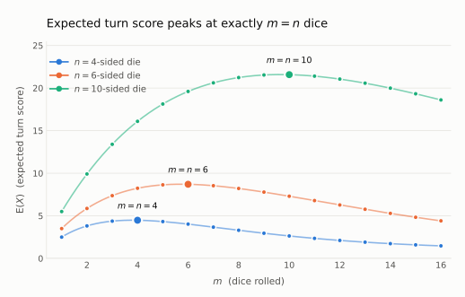

{% raw %}
<article class="paper">
<header class="paper-header">
<h1 class="paper-title">Roll as many dice as the die has sides</h1>
<p class="paper-deck">The expected turn score in Hog with an
<span class="katex"><span class="katex-mathml"><math xmlns="http://www.w3.org/1998/Math/MathML"><semantics><mrow><mi>n</mi></mrow><annotation encoding="application/x-tex">n</annotation></semantics></math></span><span class="katex-html" aria-hidden="true"><span class="katex-base"><span class="katex-strut" style="height:0.4306em;"></span><span class="mord mathnormal">n</span></span></span></span>-sided
die is maximized by rolling exactly
<span class="katex"><span class="katex-mathml"><math xmlns="http://www.w3.org/1998/Math/MathML"><semantics><mrow><mi>n</mi></mrow><annotation encoding="application/x-tex">n</annotation></semantics></math></span><span class="katex-html" aria-hidden="true"><span class="katex-base"><span class="katex-strut" style="height:0.4306em;"></span><span class="mord mathnormal">n</span></span></span></span>
dice</p>
<p class="paper-author">By Samuel Chen and Mikhail Carmien</p>
<p class="paper-date">Aug 20, 2026</p>
<p class="paper-links"><a href="/papers/hog/roll-as-many-dice.pdf" download><svg viewBox="0 0 16 16" fill="none" stroke="currentColor" stroke-width="1.5" stroke-linecap="round" stroke-linejoin="round" aria-hidden="true"><path d="M8 1.75v8.5M4.75 7l3.25 3.25L11.25 7M2.25 13.25h11.5"/></svg>Download PDF</a></p>
</header>
<p>CS61A describes the rules as</p>
<blockquote>
<p>In Hog, two players alternate turns trying to be the first to end a
turn with at least 100 total points. On each turn, the current player
chooses some number of dice to roll, up to 10. That player’s score for
the turn is the sum of the dice outcomes. However, a player who rolls
too many dice risks:</p>
<p><strong>Sow Sad</strong>. If any of the dice outcomes is a 1, the
current player’s score for the turn is <code>1</code>.</p>
</blockquote>
<p>In this paper, we show that for an
<span class="katex"><span class="katex-mathml"><math xmlns="http://www.w3.org/1998/Math/MathML"><semantics><mrow><mi>n</mi></mrow><annotation encoding="application/x-tex">n</annotation></semantics></math></span><span class="katex-html" aria-hidden="true"><span class="katex-base"><span class="katex-strut" style="height:0.4306em;"></span><span class="mord mathnormal">n</span></span></span></span>-sided
die, the expected value is maximized by rolling
<span class="katex"><span class="katex-mathml"><math xmlns="http://www.w3.org/1998/Math/MathML"><semantics><mrow><mi>n</mi></mrow><annotation encoding="application/x-tex">n</annotation></semantics></math></span><span class="katex-html" aria-hidden="true"><span class="katex-base"><span class="katex-strut" style="height:0.4306em;"></span><span class="mord mathnormal">n</span></span></span></span>
dice for every natural number
<span class="katex"><span class="katex-mathml"><math xmlns="http://www.w3.org/1998/Math/MathML"><semantics><mrow><mi>n</mi><mo>≥</mo><mn>2</mn></mrow><annotation encoding="application/x-tex">n \geq 2</annotation></semantics></math></span><span class="katex-html" aria-hidden="true"><span class="katex-base"><span class="katex-strut" style="height:0.7719em;vertical-align:-0.136em;"></span><span class="mord mathnormal">n</span><span class="mspace" style="margin-right:0.2778em;"></span><span class="mrel">≥</span><span class="mspace" style="margin-right:0.2778em;"></span></span><span class="katex-base"><span class="katex-strut" style="height:0.6444em;"></span><span class="mord">2</span></span></span></span>.
Therefore, when there is no limit to the number of dice that can be
rolled, the optimal choice for an
<span class="katex"><span class="katex-mathml"><math xmlns="http://www.w3.org/1998/Math/MathML"><semantics><mrow><mi>n</mi></mrow><annotation encoding="application/x-tex">n</annotation></semantics></math></span><span class="katex-html" aria-hidden="true"><span class="katex-base"><span class="katex-strut" style="height:0.4306em;"></span><span class="mord mathnormal">n</span></span></span></span>-sided
die is to roll
<span class="katex"><span class="katex-mathml"><math xmlns="http://www.w3.org/1998/Math/MathML"><semantics><mrow><mi>n</mi></mrow><annotation encoding="application/x-tex">n</annotation></semantics></math></span><span class="katex-html" aria-hidden="true"><span class="katex-base"><span class="katex-strut" style="height:0.4306em;"></span><span class="mord mathnormal">n</span></span></span></span>
dice.</p>
<h2 id="derive-the-expected-turn-score">Derive the expected turn
score</h2>
<p>For one six-sided die,
<span class="katex-display"><span class="katex"><span class="katex-mathml"><math xmlns="http://www.w3.org/1998/Math/MathML" display="block"><semantics><mrow><mi>P</mi><mo stretchy="false">(</mo><mn>1</mn><mo stretchy="false">)</mo><mo>=</mo><mfrac><mn>1</mn><mn>6</mn></mfrac><mo separator="true">,</mo><mspace width="1em"/><mi>P</mi><mo stretchy="false">(</mo><mi mathvariant="normal">¬</mi><mn>1</mn><mo stretchy="false">)</mo><mo>=</mo><mfrac><mn>5</mn><mn>6</mn></mfrac><mi mathvariant="normal">.</mi></mrow><annotation encoding="application/x-tex">
P(1)=\frac{1}{6}, \quad P(\neg 1)=\frac{5}{6}.
</annotation></semantics></math></span><span class="katex-html" aria-hidden="true"><span class="katex-base"><span class="katex-strut" style="height:1em;vertical-align:-0.25em;"></span><span class="mord mathnormal" style="margin-right:0.1389em;">P</span><span class="mopen">(</span><span class="mord">1</span><span class="mclose">)</span><span class="mspace" style="margin-right:0.2778em;"></span><span class="mrel">=</span><span class="mspace" style="margin-right:0.2778em;"></span></span><span class="katex-base"><span class="katex-strut" style="height:2.0074em;vertical-align:-0.686em;"></span><span class="mord"><span class="mopen nulldelimiter"></span><span class="mfrac"><span class="vlist-t vlist-t2"><span class="vlist-r"><span class="vlist" style="height:1.3214em;"><span style="top:-2.314em;"><span class="pstrut" style="height:3em;"></span><span class="mord"><span class="mord">6</span></span></span><span style="top:-3.23em;"><span class="pstrut" style="height:3em;"></span><span class="frac-line" style="border-bottom-width:0.04em;"></span></span><span style="top:-3.677em;"><span class="pstrut" style="height:3em;"></span><span class="mord"><span class="mord">1</span></span></span></span><span class="vlist-s">​</span></span><span class="vlist-r"><span class="vlist" style="height:0.686em;"><span></span></span></span></span></span><span class="mclose nulldelimiter"></span></span><span class="mpunct">,</span><span class="mspace" style="margin-right:1em;"></span><span class="mspace" style="margin-right:0.1667em;"></span><span class="mord mathnormal" style="margin-right:0.1389em;">P</span><span class="mopen">(</span><span class="mord">¬1</span><span class="mclose">)</span><span class="mspace" style="margin-right:0.2778em;"></span><span class="mrel">=</span><span class="mspace" style="margin-right:0.2778em;"></span></span><span class="katex-base"><span class="katex-strut" style="height:2.0074em;vertical-align:-0.686em;"></span><span class="mord"><span class="mopen nulldelimiter"></span><span class="mfrac"><span class="vlist-t vlist-t2"><span class="vlist-r"><span class="vlist" style="height:1.3214em;"><span style="top:-2.314em;"><span class="pstrut" style="height:3em;"></span><span class="mord"><span class="mord">6</span></span></span><span style="top:-3.23em;"><span class="pstrut" style="height:3em;"></span><span class="frac-line" style="border-bottom-width:0.04em;"></span></span><span style="top:-3.677em;"><span class="pstrut" style="height:3em;"></span><span class="mord"><span class="mord">5</span></span></span></span><span class="vlist-s">​</span></span><span class="vlist-r"><span class="vlist" style="height:0.686em;"><span></span></span></span></span></span><span class="mclose nulldelimiter"></span></span><span class="mord">.</span></span></span></span></span>
And the total expectation is
<span class="katex-display"><span class="katex"><span class="katex-mathml"><math xmlns="http://www.w3.org/1998/Math/MathML" display="block"><semantics><mrow><mtext>E</mtext><mo stretchy="false">(</mo><mi>X</mi><mo stretchy="false">)</mo><mo>=</mo><mfrac><mn>1</mn><mn>6</mn></mfrac><mo stretchy="false">(</mo><mn>1</mn><mo stretchy="false">)</mo><mo>+</mo><mfrac><mn>5</mn><mn>6</mn></mfrac><mo stretchy="false">(</mo><mn>4</mn><mo stretchy="false">)</mo><mo>=</mo><mn>3.5</mn></mrow><annotation encoding="application/x-tex">
\text{E}(X) = \frac{1}{6} (1) + \frac{5}{6}(4) = 3.5
</annotation></semantics></math></span><span class="katex-html" aria-hidden="true"><span class="katex-base"><span class="katex-strut" style="height:1em;vertical-align:-0.25em;"></span><span class="mord text"><span class="mord">E</span></span><span class="mopen">(</span><span class="mord mathnormal" style="margin-right:0.0785em;">X</span><span class="mclose">)</span><span class="mspace" style="margin-right:0.2778em;"></span><span class="mrel">=</span><span class="mspace" style="margin-right:0.2778em;"></span></span><span class="katex-base"><span class="katex-strut" style="height:2.0074em;vertical-align:-0.686em;"></span><span class="mord"><span class="mopen nulldelimiter"></span><span class="mfrac"><span class="vlist-t vlist-t2"><span class="vlist-r"><span class="vlist" style="height:1.3214em;"><span style="top:-2.314em;"><span class="pstrut" style="height:3em;"></span><span class="mord"><span class="mord">6</span></span></span><span style="top:-3.23em;"><span class="pstrut" style="height:3em;"></span><span class="frac-line" style="border-bottom-width:0.04em;"></span></span><span style="top:-3.677em;"><span class="pstrut" style="height:3em;"></span><span class="mord"><span class="mord">1</span></span></span></span><span class="vlist-s">​</span></span><span class="vlist-r"><span class="vlist" style="height:0.686em;"><span></span></span></span></span></span><span class="mclose nulldelimiter"></span></span><span class="mopen">(</span><span class="mord">1</span><span class="mclose">)</span><span class="mspace" style="margin-right:0.2222em;"></span><span class="mbin">+</span><span class="mspace" style="margin-right:0.2222em;"></span></span><span class="katex-base"><span class="katex-strut" style="height:2.0074em;vertical-align:-0.686em;"></span><span class="mord"><span class="mopen nulldelimiter"></span><span class="mfrac"><span class="vlist-t vlist-t2"><span class="vlist-r"><span class="vlist" style="height:1.3214em;"><span style="top:-2.314em;"><span class="pstrut" style="height:3em;"></span><span class="mord"><span class="mord">6</span></span></span><span style="top:-3.23em;"><span class="pstrut" style="height:3em;"></span><span class="frac-line" style="border-bottom-width:0.04em;"></span></span><span style="top:-3.677em;"><span class="pstrut" style="height:3em;"></span><span class="mord"><span class="mord">5</span></span></span></span><span class="vlist-s">​</span></span><span class="vlist-r"><span class="vlist" style="height:0.686em;"><span></span></span></span></span></span><span class="mclose nulldelimiter"></span></span><span class="mopen">(</span><span class="mord">4</span><span class="mclose">)</span><span class="mspace" style="margin-right:0.2778em;"></span><span class="mrel">=</span><span class="mspace" style="margin-right:0.2778em;"></span></span><span class="katex-base"><span class="katex-strut" style="height:0.6444em;"></span><span class="mord">3.5</span></span></span></span></span>
where
<span class="katex"><span class="katex-mathml"><math xmlns="http://www.w3.org/1998/Math/MathML"><semantics><mrow><mn>4</mn></mrow><annotation encoding="application/x-tex">4</annotation></semantics></math></span><span class="katex-html" aria-hidden="true"><span class="katex-base"><span class="katex-strut" style="height:0.6444em;"></span><span class="mord">4</span></span></span></span>
is the average of the outcomes
<span class="katex"><span class="katex-mathml"><math xmlns="http://www.w3.org/1998/Math/MathML"><semantics><mrow><mn>2</mn></mrow><annotation encoding="application/x-tex">2</annotation></semantics></math></span><span class="katex-html" aria-hidden="true"><span class="katex-base"><span class="katex-strut" style="height:0.6444em;"></span><span class="mord">2</span></span></span></span>
through
<span class="katex"><span class="katex-mathml"><math xmlns="http://www.w3.org/1998/Math/MathML"><semantics><mrow><mn>6</mn></mrow><annotation encoding="application/x-tex">6</annotation></semantics></math></span><span class="katex-html" aria-hidden="true"><span class="katex-base"><span class="katex-strut" style="height:0.6444em;"></span><span class="mord">6</span></span></span></span>.</p>
<p>We now generalize this idea to rolling
<span class="katex"><span class="katex-mathml"><math xmlns="http://www.w3.org/1998/Math/MathML"><semantics><mrow><mi>m</mi></mrow><annotation encoding="application/x-tex">m</annotation></semantics></math></span><span class="katex-html" aria-hidden="true"><span class="katex-base"><span class="katex-strut" style="height:0.4306em;"></span><span class="mord mathnormal">m</span></span></span></span>
dice, each with
<span class="katex"><span class="katex-mathml"><math xmlns="http://www.w3.org/1998/Math/MathML"><semantics><mrow><mi>n</mi></mrow><annotation encoding="application/x-tex">n</annotation></semantics></math></span><span class="katex-html" aria-hidden="true"><span class="katex-base"><span class="katex-strut" style="height:0.4306em;"></span><span class="mord mathnormal">n</span></span></span></span>
sides. With multiple dice, Sow Sad occurs if at least one of the
<span class="katex"><span class="katex-mathml"><math xmlns="http://www.w3.org/1998/Math/MathML"><semantics><mrow><mi>m</mi></mrow><annotation encoding="application/x-tex">m</annotation></semantics></math></span><span class="katex-html" aria-hidden="true"><span class="katex-base"><span class="katex-strut" style="height:0.4306em;"></span><span class="mord mathnormal">m</span></span></span></span>
dice rolls a
<span class="katex"><span class="katex-mathml"><math xmlns="http://www.w3.org/1998/Math/MathML"><semantics><mrow><mn>1</mn></mrow><annotation encoding="application/x-tex">1</annotation></semantics></math></span><span class="katex-html" aria-hidden="true"><span class="katex-base"><span class="katex-strut" style="height:0.6444em;"></span><span class="mord">1</span></span></span></span>.</p>
<p>Then since the dice are independent, the probabilities become
<span class="katex-display"><span class="katex"><span class="katex-mathml"><math xmlns="http://www.w3.org/1998/Math/MathML" display="block"><semantics><mrow><mi>P</mi><mo stretchy="false">(</mo><mtext>no 1s</mtext><mo stretchy="false">)</mo><mo>=</mo><msup><mrow><mo fence="true">(</mo><mfrac><mrow><mi>n</mi><mo>−</mo><mn>1</mn></mrow><mi>n</mi></mfrac><mo fence="true">)</mo></mrow><mi>m</mi></msup></mrow><annotation encoding="application/x-tex">
P(\text{no 1s}) = \left( \frac{n-1}{n} \right)^m
</annotation></semantics></math></span><span class="katex-html" aria-hidden="true"><span class="katex-base"><span class="katex-strut" style="height:1em;vertical-align:-0.25em;"></span><span class="mord mathnormal" style="margin-right:0.1389em;">P</span><span class="mopen">(</span><span class="mord text"><span class="mord">no 1s</span></span><span class="mclose">)</span><span class="mspace" style="margin-right:0.2778em;"></span><span class="mrel">=</span><span class="mspace" style="margin-right:0.2778em;"></span></span><span class="katex-base"><span class="katex-strut" style="height:2.4543em;vertical-align:-0.95em;"></span><span class="minner"><span class="minner"><span class="mopen delimcenter" style="top:0em;"><span class="delimsizing size3">(</span></span><span class="mord"><span class="mopen nulldelimiter"></span><span class="mfrac"><span class="vlist-t vlist-t2"><span class="vlist-r"><span class="vlist" style="height:1.3214em;"><span style="top:-2.314em;"><span class="pstrut" style="height:3em;"></span><span class="mord"><span class="mord mathnormal">n</span></span></span><span style="top:-3.23em;"><span class="pstrut" style="height:3em;"></span><span class="frac-line" style="border-bottom-width:0.04em;"></span></span><span style="top:-3.677em;"><span class="pstrut" style="height:3em;"></span><span class="mord"><span class="mord mathnormal">n</span><span class="mspace" style="margin-right:0.2222em;"></span><span class="mbin">−</span><span class="mspace" style="margin-right:0.2222em;"></span><span class="mord">1</span></span></span></span><span class="vlist-s">​</span></span><span class="vlist-r"><span class="vlist" style="height:0.686em;"><span></span></span></span></span></span><span class="mclose nulldelimiter"></span></span><span class="mclose delimcenter" style="top:0em;"><span class="delimsizing size3">)</span></span></span><span class="msupsub"><span class="vlist-t"><span class="vlist-r"><span class="vlist" style="height:1.5043em;"><span style="top:-3.9029em;margin-right:0.05em;"><span class="pstrut" style="height:2.7em;"></span><span class="katex-sizing reset-size6 size3 mtight"><span class="mord mathnormal mtight">m</span></span></span></span></span></span></span></span></span></span></span></span>
and
<span class="katex-display"><span class="katex"><span class="katex-mathml"><math xmlns="http://www.w3.org/1998/Math/MathML" display="block"><semantics><mrow><mi>P</mi><mo stretchy="false">(</mo><mtext>at least one 1</mtext><mo stretchy="false">)</mo><mo>=</mo><mn>1</mn><mo>−</mo><msup><mrow><mo fence="true">(</mo><mfrac><mrow><mi>n</mi><mo>−</mo><mn>1</mn></mrow><mi>n</mi></mfrac><mo fence="true">)</mo></mrow><mi>m</mi></msup></mrow><annotation encoding="application/x-tex">
P(\text{at least one 1}) = 1 - \left( \frac{n-1}{n} \right)^m
</annotation></semantics></math></span><span class="katex-html" aria-hidden="true"><span class="katex-base"><span class="katex-strut" style="height:1em;vertical-align:-0.25em;"></span><span class="mord mathnormal" style="margin-right:0.1389em;">P</span><span class="mopen">(</span><span class="mord text"><span class="mord">at least one 1</span></span><span class="mclose">)</span><span class="mspace" style="margin-right:0.2778em;"></span><span class="mrel">=</span><span class="mspace" style="margin-right:0.2778em;"></span></span><span class="katex-base"><span class="katex-strut" style="height:0.7278em;vertical-align:-0.0833em;"></span><span class="mord">1</span><span class="mspace" style="margin-right:0.2222em;"></span><span class="mbin">−</span><span class="mspace" style="margin-right:0.2222em;"></span></span><span class="katex-base"><span class="katex-strut" style="height:2.4543em;vertical-align:-0.95em;"></span><span class="minner"><span class="minner"><span class="mopen delimcenter" style="top:0em;"><span class="delimsizing size3">(</span></span><span class="mord"><span class="mopen nulldelimiter"></span><span class="mfrac"><span class="vlist-t vlist-t2"><span class="vlist-r"><span class="vlist" style="height:1.3214em;"><span style="top:-2.314em;"><span class="pstrut" style="height:3em;"></span><span class="mord"><span class="mord mathnormal">n</span></span></span><span style="top:-3.23em;"><span class="pstrut" style="height:3em;"></span><span class="frac-line" style="border-bottom-width:0.04em;"></span></span><span style="top:-3.677em;"><span class="pstrut" style="height:3em;"></span><span class="mord"><span class="mord mathnormal">n</span><span class="mspace" style="margin-right:0.2222em;"></span><span class="mbin">−</span><span class="mspace" style="margin-right:0.2222em;"></span><span class="mord">1</span></span></span></span><span class="vlist-s">​</span></span><span class="vlist-r"><span class="vlist" style="height:0.686em;"><span></span></span></span></span></span><span class="mclose nulldelimiter"></span></span><span class="mclose delimcenter" style="top:0em;"><span class="delimsizing size3">)</span></span></span><span class="msupsub"><span class="vlist-t"><span class="vlist-r"><span class="vlist" style="height:1.5043em;"><span style="top:-3.9029em;margin-right:0.05em;"><span class="pstrut" style="height:2.7em;"></span><span class="katex-sizing reset-size6 size3 mtight"><span class="mord mathnormal mtight">m</span></span></span></span></span></span></span></span></span></span></span></span></p>
<p>From the law of total expectation, if a set of events is mutually
exclusive and covers every outcome, then the expected value is the sum
of the expected value given each event multiplied by the probability of
that event.
<span class="katex-display"><span class="katex"><span class="katex-mathml"><math xmlns="http://www.w3.org/1998/Math/MathML" display="block"><semantics><mrow><mtext>E</mtext><mo stretchy="false">(</mo><mi>X</mi><mo stretchy="false">)</mo><mo>=</mo><munder><mo>∑</mo><mi>i</mi></munder><mi>P</mi><mo stretchy="false">(</mo><msub><mi>Y</mi><mi>i</mi></msub><mo stretchy="false">)</mo><mo>⋅</mo><mtext>E</mtext><mo stretchy="false">(</mo><mi>X</mi><mo>∣</mo><msub><mi>Y</mi><mi>i</mi></msub><mo stretchy="false">)</mo></mrow><annotation encoding="application/x-tex">
\text{E}(X) = \sum_i P(Y_{i}) \cdot \text{E}(X \mid Y_{i})
</annotation></semantics></math></span><span class="katex-html" aria-hidden="true"><span class="katex-base"><span class="katex-strut" style="height:1em;vertical-align:-0.25em;"></span><span class="mord text"><span class="mord">E</span></span><span class="mopen">(</span><span class="mord mathnormal" style="margin-right:0.0785em;">X</span><span class="mclose">)</span><span class="mspace" style="margin-right:0.2778em;"></span><span class="mrel">=</span><span class="mspace" style="margin-right:0.2778em;"></span></span><span class="katex-base"><span class="katex-strut" style="height:2.3277em;vertical-align:-1.2777em;"></span><span class="mop op-limits"><span class="vlist-t vlist-t2"><span class="vlist-r"><span class="vlist" style="height:1.05em;"><span style="top:-1.8723em;margin-left:0em;"><span class="pstrut" style="height:3.05em;"></span><span class="katex-sizing reset-size6 size3 mtight"><span class="mord mathnormal mtight">i</span></span></span><span style="top:-3.05em;"><span class="pstrut" style="height:3.05em;"></span><span><span class="mop op-symbol large-op">∑</span></span></span></span><span class="vlist-s">​</span></span><span class="vlist-r"><span class="vlist" style="height:1.2777em;"><span></span></span></span></span></span><span class="mspace" style="margin-right:0.1667em;"></span><span class="mord mathnormal" style="margin-right:0.1389em;">P</span><span class="mopen">(</span><span class="mord"><span class="mord mathnormal" style="margin-right:0.2222em;">Y</span><span class="msupsub"><span class="vlist-t vlist-t2"><span class="vlist-r"><span class="vlist" style="height:0.3117em;"><span style="top:-2.55em;margin-left:-0.2222em;margin-right:0.05em;"><span class="pstrut" style="height:2.7em;"></span><span class="katex-sizing reset-size6 size3 mtight"><span class="mord mtight"><span class="mord mathnormal mtight">i</span></span></span></span></span><span class="vlist-s">​</span></span><span class="vlist-r"><span class="vlist" style="height:0.15em;"><span></span></span></span></span></span></span><span class="mclose">)</span><span class="mspace" style="margin-right:0.2222em;"></span><span class="mbin">⋅</span><span class="mspace" style="margin-right:0.2222em;"></span></span><span class="katex-base"><span class="katex-strut" style="height:1em;vertical-align:-0.25em;"></span><span class="mord text"><span class="mord">E</span></span><span class="mopen">(</span><span class="mord mathnormal" style="margin-right:0.0785em;">X</span><span class="mspace" style="margin-right:0.2778em;"></span><span class="mrel">∣</span><span class="mspace" style="margin-right:0.2778em;"></span></span><span class="katex-base"><span class="katex-strut" style="height:1em;vertical-align:-0.25em;"></span><span class="mord"><span class="mord mathnormal" style="margin-right:0.2222em;">Y</span><span class="msupsub"><span class="vlist-t vlist-t2"><span class="vlist-r"><span class="vlist" style="height:0.3117em;"><span style="top:-2.55em;margin-left:-0.2222em;margin-right:0.05em;"><span class="pstrut" style="height:2.7em;"></span><span class="katex-sizing reset-size6 size3 mtight"><span class="mord mtight"><span class="mord mathnormal mtight">i</span></span></span></span></span><span class="vlist-s">​</span></span><span class="vlist-r"><span class="vlist" style="height:0.15em;"><span></span></span></span></span></span></span><span class="mclose">)</span></span></span></span></span>
Sow Sad and its complement are two such events, so
<span class="katex-display"><span class="katex"><span class="katex-mathml"><math xmlns="http://www.w3.org/1998/Math/MathML" display="block"><semantics><mtable rowspacing="0.25em" columnalign="right left" columnspacing="0em"><mtr><mtd><mstyle scriptlevel="0" displaystyle="true"><mrow><mtext>E</mtext><mo stretchy="false">(</mo><mi>X</mi><mo stretchy="false">)</mo></mrow></mstyle></mtd><mtd><mstyle scriptlevel="0" displaystyle="true"><mrow><mrow></mrow><mo>=</mo><mi>P</mi><mo stretchy="false">(</mo><mtext>at least one 1</mtext><mo stretchy="false">)</mo><mtext> </mtext><mtext>E</mtext><mo stretchy="false">(</mo><mi>X</mi><mo>∣</mo><mtext>at least one 1</mtext><mo stretchy="false">)</mo></mrow></mstyle></mtd></mtr><mtr><mtd><mstyle scriptlevel="0" displaystyle="true"><mrow></mrow></mstyle></mtd><mtd><mstyle scriptlevel="0" displaystyle="true"><mrow><mrow></mrow><mspace width="1em"/><mo>+</mo><mi>P</mi><mo stretchy="false">(</mo><mtext>no 1s</mtext><mo stretchy="false">)</mo><mtext> </mtext><mtext>E</mtext><mo stretchy="false">(</mo><mi>X</mi><mo>∣</mo><mtext>no 1s</mtext><mo stretchy="false">)</mo></mrow></mstyle></mtd></mtr></mtable><annotation encoding="application/x-tex">
\begin{aligned}
\text{E}(X) &amp;= P(\text{at least one 1}) \, \text{E}(X \mid \text{at least one 1}) \\
&amp;\quad + P(\text{no 1s}) \, \text{E}(X \mid \text{no 1s})
\end{aligned}
</annotation></semantics></math></span><span class="katex-html" aria-hidden="true"><span class="katex-base"><span class="katex-strut" style="height:2.7em;vertical-align:-1.1em;"></span><span class="mord"><span class="mtable"><span class="col-align-r"><span class="vlist-t vlist-t2"><span class="vlist-r"><span class="vlist" style="height:1.6em;"><span style="top:-3.76em;"><span class="pstrut" style="height:3em;"></span><span class="mord"><span class="mord text"><span class="mord">E</span></span><span class="mopen">(</span><span class="mord mathnormal" style="margin-right:0.0785em;">X</span><span class="mclose">)</span></span></span><span style="top:-2.26em;"><span class="pstrut" style="height:3em;"></span><span class="mord"></span></span></span><span class="vlist-s">​</span></span><span class="vlist-r"><span class="vlist" style="height:1.1em;"><span></span></span></span></span></span><span class="col-align-l"><span class="vlist-t vlist-t2"><span class="vlist-r"><span class="vlist" style="height:1.6em;"><span style="top:-3.76em;"><span class="pstrut" style="height:3em;"></span><span class="mord"><span class="mord"></span><span class="mspace" style="margin-right:0.2778em;"></span><span class="mrel">=</span><span class="mspace" style="margin-right:0.2778em;"></span><span class="mord mathnormal" style="margin-right:0.1389em;">P</span><span class="mopen">(</span><span class="mord text"><span class="mord">at least one 1</span></span><span class="mclose">)</span><span class="mspace" style="margin-right:0.1667em;"></span><span class="mord text"><span class="mord">E</span></span><span class="mopen">(</span><span class="mord mathnormal" style="margin-right:0.0785em;">X</span><span class="mspace" style="margin-right:0.2778em;"></span><span class="mrel">∣</span><span class="mspace" style="margin-right:0.2778em;"></span><span class="mord text"><span class="mord">at least one 1</span></span><span class="mclose">)</span></span></span><span style="top:-2.26em;"><span class="pstrut" style="height:3em;"></span><span class="mord"><span class="mord"></span><span class="mspace" style="margin-right:1em;"></span><span class="mspace" style="margin-right:0.2222em;"></span><span class="mbin">+</span><span class="mspace" style="margin-right:0.2222em;"></span><span class="mord mathnormal" style="margin-right:0.1389em;">P</span><span class="mopen">(</span><span class="mord text"><span class="mord">no 1s</span></span><span class="mclose">)</span><span class="mspace" style="margin-right:0.1667em;"></span><span class="mord text"><span class="mord">E</span></span><span class="mopen">(</span><span class="mord mathnormal" style="margin-right:0.0785em;">X</span><span class="mspace" style="margin-right:0.2778em;"></span><span class="mrel">∣</span><span class="mspace" style="margin-right:0.2778em;"></span><span class="mord text"><span class="mord">no 1s</span></span><span class="mclose">)</span></span></span></span><span class="vlist-s">​</span></span><span class="vlist-r"><span class="vlist" style="height:1.1em;"><span></span></span></span></span></span></span></span></span></span></span></span>
Then since Sow Sad gives you 1 point,
<span class="katex-display"><span class="katex"><span class="katex-mathml"><math xmlns="http://www.w3.org/1998/Math/MathML" display="block"><semantics><mrow><mtext>E</mtext><mo stretchy="false">(</mo><mi>X</mi><mo>∣</mo><mtext>at least one 1</mtext><mo stretchy="false">)</mo><mo>=</mo><mn>1</mn></mrow><annotation encoding="application/x-tex">
\text{E}(X \mid \text{at least one 1}) = 1
</annotation></semantics></math></span><span class="katex-html" aria-hidden="true"><span class="katex-base"><span class="katex-strut" style="height:1em;vertical-align:-0.25em;"></span><span class="mord text"><span class="mord">E</span></span><span class="mopen">(</span><span class="mord mathnormal" style="margin-right:0.0785em;">X</span><span class="mspace" style="margin-right:0.2778em;"></span><span class="mrel">∣</span><span class="mspace" style="margin-right:0.2778em;"></span></span><span class="katex-base"><span class="katex-strut" style="height:1em;vertical-align:-0.25em;"></span><span class="mord text"><span class="mord">at least one 1</span></span><span class="mclose">)</span><span class="mspace" style="margin-right:0.2778em;"></span><span class="mrel">=</span><span class="mspace" style="margin-right:0.2778em;"></span></span><span class="katex-base"><span class="katex-strut" style="height:0.6444em;"></span><span class="mord">1</span></span></span></span></span>
Therefore,
<span class="katex-display"><span class="katex"><span class="katex-mathml"><math xmlns="http://www.w3.org/1998/Math/MathML" display="block"><semantics><mrow><mtext>E</mtext><mo stretchy="false">(</mo><mi>X</mi><mo stretchy="false">)</mo><mo>=</mo><mrow><mo fence="true">[</mo><mn>1</mn><mo>−</mo><msup><mrow><mo fence="true">(</mo><mfrac><mrow><mi>n</mi><mo>−</mo><mn>1</mn></mrow><mi>n</mi></mfrac><mo fence="true">)</mo></mrow><mi>m</mi></msup><mo fence="true">]</mo></mrow><mo>+</mo><msup><mrow><mo fence="true">(</mo><mfrac><mrow><mi>n</mi><mo>−</mo><mn>1</mn></mrow><mi>n</mi></mfrac><mo fence="true">)</mo></mrow><mi>m</mi></msup><mtext>E</mtext><mo stretchy="false">(</mo><mi>X</mi><mo>∣</mo><mtext>no 1s</mtext><mo stretchy="false">)</mo></mrow><annotation encoding="application/x-tex">
\text{E}(X) = \left[ 1 - \left( \frac{n-1}{n} \right)^m \right] + \left( \frac{n-1}{n} \right)^m \text{E}(X \mid \text{no 1s})
</annotation></semantics></math></span><span class="katex-html" aria-hidden="true"><span class="katex-base"><span class="katex-strut" style="height:1em;vertical-align:-0.25em;"></span><span class="mord text"><span class="mord">E</span></span><span class="mopen">(</span><span class="mord mathnormal" style="margin-right:0.0785em;">X</span><span class="mclose">)</span><span class="mspace" style="margin-right:0.2778em;"></span><span class="mrel">=</span><span class="mspace" style="margin-right:0.2778em;"></span></span><span class="katex-base"><span class="katex-strut" style="height:2.4543em;vertical-align:-0.95em;"></span><span class="minner"><span class="mopen delimcenter" style="top:0em;"><span class="delimsizing size3">[</span></span><span class="mord">1</span><span class="mspace" style="margin-right:0.2222em;"></span><span class="mbin">−</span><span class="mspace" style="margin-right:0.2222em;"></span><span class="minner"><span class="minner"><span class="mopen delimcenter" style="top:0em;"><span class="delimsizing size3">(</span></span><span class="mord"><span class="mopen nulldelimiter"></span><span class="mfrac"><span class="vlist-t vlist-t2"><span class="vlist-r"><span class="vlist" style="height:1.3214em;"><span style="top:-2.314em;"><span class="pstrut" style="height:3em;"></span><span class="mord"><span class="mord mathnormal">n</span></span></span><span style="top:-3.23em;"><span class="pstrut" style="height:3em;"></span><span class="frac-line" style="border-bottom-width:0.04em;"></span></span><span style="top:-3.677em;"><span class="pstrut" style="height:3em;"></span><span class="mord"><span class="mord mathnormal">n</span><span class="mspace" style="margin-right:0.2222em;"></span><span class="mbin">−</span><span class="mspace" style="margin-right:0.2222em;"></span><span class="mord">1</span></span></span></span><span class="vlist-s">​</span></span><span class="vlist-r"><span class="vlist" style="height:0.686em;"><span></span></span></span></span></span><span class="mclose nulldelimiter"></span></span><span class="mclose delimcenter" style="top:0em;"><span class="delimsizing size3">)</span></span></span><span class="msupsub"><span class="vlist-t"><span class="vlist-r"><span class="vlist" style="height:1.5043em;"><span style="top:-3.9029em;margin-right:0.05em;"><span class="pstrut" style="height:2.7em;"></span><span class="katex-sizing reset-size6 size3 mtight"><span class="mord mathnormal mtight">m</span></span></span></span></span></span></span></span><span class="mclose delimcenter" style="top:0em;"><span class="delimsizing size3">]</span></span></span><span class="mspace" style="margin-right:0.2222em;"></span><span class="mbin">+</span><span class="mspace" style="margin-right:0.2222em;"></span></span><span class="katex-base"><span class="katex-strut" style="height:2.4543em;vertical-align:-0.95em;"></span><span class="minner"><span class="minner"><span class="mopen delimcenter" style="top:0em;"><span class="delimsizing size3">(</span></span><span class="mord"><span class="mopen nulldelimiter"></span><span class="mfrac"><span class="vlist-t vlist-t2"><span class="vlist-r"><span class="vlist" style="height:1.3214em;"><span style="top:-2.314em;"><span class="pstrut" style="height:3em;"></span><span class="mord"><span class="mord mathnormal">n</span></span></span><span style="top:-3.23em;"><span class="pstrut" style="height:3em;"></span><span class="frac-line" style="border-bottom-width:0.04em;"></span></span><span style="top:-3.677em;"><span class="pstrut" style="height:3em;"></span><span class="mord"><span class="mord mathnormal">n</span><span class="mspace" style="margin-right:0.2222em;"></span><span class="mbin">−</span><span class="mspace" style="margin-right:0.2222em;"></span><span class="mord">1</span></span></span></span><span class="vlist-s">​</span></span><span class="vlist-r"><span class="vlist" style="height:0.686em;"><span></span></span></span></span></span><span class="mclose nulldelimiter"></span></span><span class="mclose delimcenter" style="top:0em;"><span class="delimsizing size3">)</span></span></span><span class="msupsub"><span class="vlist-t"><span class="vlist-r"><span class="vlist" style="height:1.5043em;"><span style="top:-3.9029em;margin-right:0.05em;"><span class="pstrut" style="height:2.7em;"></span><span class="katex-sizing reset-size6 size3 mtight"><span class="mord mathnormal mtight">m</span></span></span></span></span></span></span></span><span class="mspace" style="margin-right:0.1667em;"></span><span class="mord text"><span class="mord">E</span></span><span class="mopen">(</span><span class="mord mathnormal" style="margin-right:0.0785em;">X</span><span class="mspace" style="margin-right:0.2778em;"></span><span class="mrel">∣</span><span class="mspace" style="margin-right:0.2778em;"></span></span><span class="katex-base"><span class="katex-strut" style="height:1em;vertical-align:-0.25em;"></span><span class="mord text"><span class="mord">no 1s</span></span><span class="mclose">)</span></span></span></span></span></p>
<p>To compute
<span class="katex"><span class="katex-mathml"><math xmlns="http://www.w3.org/1998/Math/MathML"><semantics><mrow><mtext>E</mtext><mo stretchy="false">(</mo><mi>X</mi><mo>∣</mo><mtext>no 1s</mtext><mo stretchy="false">)</mo></mrow><annotation encoding="application/x-tex">\text{E}(X \mid \text{no 1s})</annotation></semantics></math></span><span class="katex-html" aria-hidden="true"><span class="katex-base"><span class="katex-strut" style="height:1em;vertical-align:-0.25em;"></span><span class="mord text"><span class="mord">E</span></span><span class="mopen">(</span><span class="mord mathnormal" style="margin-right:0.0785em;">X</span><span class="mspace" style="margin-right:0.2778em;"></span><span class="mrel">∣</span><span class="mspace" style="margin-right:0.2778em;"></span></span><span class="katex-base"><span class="katex-strut" style="height:1em;vertical-align:-0.25em;"></span><span class="mord text"><span class="mord">no 1s</span></span><span class="mclose">)</span></span></span></span>,
we start by thinking in terms of a single die.</p>
<p>Let
<span class="katex"><span class="katex-mathml"><math xmlns="http://www.w3.org/1998/Math/MathML"><semantics><mrow><mi>Y</mi></mrow><annotation encoding="application/x-tex">Y</annotation></semantics></math></span><span class="katex-html" aria-hidden="true"><span class="katex-base"><span class="katex-strut" style="height:0.6833em;"></span><span class="mord mathnormal" style="margin-right:0.2222em;">Y</span></span></span></span>
be the outcome of rolling
<span class="katex"><span class="katex-mathml"><math xmlns="http://www.w3.org/1998/Math/MathML"><semantics><mrow><mn>1</mn></mrow><annotation encoding="application/x-tex">1</annotation></semantics></math></span><span class="katex-html" aria-hidden="true"><span class="katex-base"><span class="katex-strut" style="height:0.6444em;"></span><span class="mord">1</span></span></span></span>
die given that it is not a
<span class="katex"><span class="katex-mathml"><math xmlns="http://www.w3.org/1998/Math/MathML"><semantics><mrow><mn>1</mn></mrow><annotation encoding="application/x-tex">1</annotation></semantics></math></span><span class="katex-html" aria-hidden="true"><span class="katex-base"><span class="katex-strut" style="height:0.6444em;"></span><span class="mord">1</span></span></span></span>,
so
<span class="katex"><span class="katex-mathml"><math xmlns="http://www.w3.org/1998/Math/MathML"><semantics><mrow><mi>Y</mi></mrow><annotation encoding="application/x-tex">Y</annotation></semantics></math></span><span class="katex-html" aria-hidden="true"><span class="katex-base"><span class="katex-strut" style="height:0.6833em;"></span><span class="mord mathnormal" style="margin-right:0.2222em;">Y</span></span></span></span>
is equally likely to be any of
<span class="katex"><span class="katex-mathml"><math xmlns="http://www.w3.org/1998/Math/MathML"><semantics><mrow><mn>2</mn></mrow><annotation encoding="application/x-tex">2</annotation></semantics></math></span><span class="katex-html" aria-hidden="true"><span class="katex-base"><span class="katex-strut" style="height:0.6444em;"></span><span class="mord">2</span></span></span></span>
through
<span class="katex"><span class="katex-mathml"><math xmlns="http://www.w3.org/1998/Math/MathML"><semantics><mrow><mi>n</mi></mrow><annotation encoding="application/x-tex">n</annotation></semantics></math></span><span class="katex-html" aria-hidden="true"><span class="katex-base"><span class="katex-strut" style="height:0.4306em;"></span><span class="mord mathnormal">n</span></span></span></span>.
On a six-sided die, there are
<span class="katex"><span class="katex-mathml"><math xmlns="http://www.w3.org/1998/Math/MathML"><semantics><mrow><mn>6</mn><mo>−</mo><mn>1</mn><mo>=</mo><mn>5</mn></mrow><annotation encoding="application/x-tex">6-1=5</annotation></semantics></math></span><span class="katex-html" aria-hidden="true"><span class="katex-base"><span class="katex-strut" style="height:0.7278em;vertical-align:-0.0833em;"></span><span class="mord">6</span><span class="mspace" style="margin-right:0.2222em;"></span><span class="mbin">−</span><span class="mspace" style="margin-right:0.2222em;"></span></span><span class="katex-base"><span class="katex-strut" style="height:0.6444em;"></span><span class="mord">1</span><span class="mspace" style="margin-right:0.2778em;"></span><span class="mrel">=</span><span class="mspace" style="margin-right:0.2778em;"></span></span><span class="katex-base"><span class="katex-strut" style="height:0.6444em;"></span><span class="mord">5</span></span></span></span>
ways to roll between a
<span class="katex"><span class="katex-mathml"><math xmlns="http://www.w3.org/1998/Math/MathML"><semantics><mrow><mn>2</mn></mrow><annotation encoding="application/x-tex">2</annotation></semantics></math></span><span class="katex-html" aria-hidden="true"><span class="katex-base"><span class="katex-strut" style="height:0.6444em;"></span><span class="mord">2</span></span></span></span>
and
<span class="katex"><span class="katex-mathml"><math xmlns="http://www.w3.org/1998/Math/MathML"><semantics><mrow><mn>6</mn></mrow><annotation encoding="application/x-tex">6</annotation></semantics></math></span><span class="katex-html" aria-hidden="true"><span class="katex-base"><span class="katex-strut" style="height:0.6444em;"></span><span class="mord">6</span></span></span></span>,
hence
<span class="katex"><span class="katex-mathml"><math xmlns="http://www.w3.org/1998/Math/MathML"><semantics><mrow><mi>P</mi><mo stretchy="false">(</mo><mi>Y</mi><mo>=</mo><mi>i</mi><mo stretchy="false">)</mo><mo>=</mo><mfrac><mn>1</mn><mrow><mn>6</mn><mo>−</mo><mn>1</mn></mrow></mfrac></mrow><annotation encoding="application/x-tex">P(Y=i)=\frac{1}{6-1}</annotation></semantics></math></span><span class="katex-html" aria-hidden="true"><span class="katex-base"><span class="katex-strut" style="height:1em;vertical-align:-0.25em;"></span><span class="mord mathnormal" style="margin-right:0.1389em;">P</span><span class="mopen">(</span><span class="mord mathnormal" style="margin-right:0.2222em;">Y</span><span class="mspace" style="margin-right:0.2778em;"></span><span class="mrel">=</span><span class="mspace" style="margin-right:0.2778em;"></span></span><span class="katex-base"><span class="katex-strut" style="height:1em;vertical-align:-0.25em;"></span><span class="mord mathnormal">i</span><span class="mclose">)</span><span class="mspace" style="margin-right:0.2778em;"></span><span class="mrel">=</span><span class="mspace" style="margin-right:0.2778em;"></span></span><span class="katex-base"><span class="katex-strut" style="height:1.2484em;vertical-align:-0.4033em;"></span><span class="mord"><span class="mopen nulldelimiter"></span><span class="mfrac"><span class="vlist-t vlist-t2"><span class="vlist-r"><span class="vlist" style="height:0.8451em;"><span style="top:-2.655em;"><span class="pstrut" style="height:3em;"></span><span class="katex-sizing reset-size6 size3 mtight"><span class="mord mtight"><span class="mord mtight">6</span><span class="mbin mtight">−</span><span class="mord mtight">1</span></span></span></span><span style="top:-3.23em;"><span class="pstrut" style="height:3em;"></span><span class="frac-line" style="border-bottom-width:0.04em;"></span></span><span style="top:-3.394em;"><span class="pstrut" style="height:3em;"></span><span class="katex-sizing reset-size6 size3 mtight"><span class="mord mtight"><span class="mord mtight">1</span></span></span></span></span><span class="vlist-s">​</span></span><span class="vlist-r"><span class="vlist" style="height:0.4033em;"><span></span></span></span></span></span><span class="mclose nulldelimiter"></span></span></span></span></span>.
To generalize to the probability of rolling an
<span class="katex"><span class="katex-mathml"><math xmlns="http://www.w3.org/1998/Math/MathML"><semantics><mrow><mi>n</mi></mrow><annotation encoding="application/x-tex">n</annotation></semantics></math></span><span class="katex-html" aria-hidden="true"><span class="katex-base"><span class="katex-strut" style="height:0.4306em;"></span><span class="mord mathnormal">n</span></span></span></span>-sided
die from
<span class="katex"><span class="katex-mathml"><math xmlns="http://www.w3.org/1998/Math/MathML"><semantics><mrow><mn>2</mn></mrow><annotation encoding="application/x-tex">2</annotation></semantics></math></span><span class="katex-html" aria-hidden="true"><span class="katex-base"><span class="katex-strut" style="height:0.6444em;"></span><span class="mord">2</span></span></span></span>
to
<span class="katex"><span class="katex-mathml"><math xmlns="http://www.w3.org/1998/Math/MathML"><semantics><mrow><mi>n</mi></mrow><annotation encoding="application/x-tex">n</annotation></semantics></math></span><span class="katex-html" aria-hidden="true"><span class="katex-base"><span class="katex-strut" style="height:0.4306em;"></span><span class="mord mathnormal">n</span></span></span></span>,
we use
<span class="katex"><span class="katex-mathml"><math xmlns="http://www.w3.org/1998/Math/MathML"><semantics><mrow><mi>P</mi><mo stretchy="false">(</mo><mi>Y</mi><mo>=</mo><mi>i</mi><mo stretchy="false">)</mo><mo>=</mo><mfrac><mn>1</mn><mrow><mi>n</mi><mo>−</mo><mn>1</mn></mrow></mfrac></mrow><annotation encoding="application/x-tex">P(Y=i) = \frac{1}{n-1}</annotation></semantics></math></span><span class="katex-html" aria-hidden="true"><span class="katex-base"><span class="katex-strut" style="height:1em;vertical-align:-0.25em;"></span><span class="mord mathnormal" style="margin-right:0.1389em;">P</span><span class="mopen">(</span><span class="mord mathnormal" style="margin-right:0.2222em;">Y</span><span class="mspace" style="margin-right:0.2778em;"></span><span class="mrel">=</span><span class="mspace" style="margin-right:0.2778em;"></span></span><span class="katex-base"><span class="katex-strut" style="height:1em;vertical-align:-0.25em;"></span><span class="mord mathnormal">i</span><span class="mclose">)</span><span class="mspace" style="margin-right:0.2778em;"></span><span class="mrel">=</span><span class="mspace" style="margin-right:0.2778em;"></span></span><span class="katex-base"><span class="katex-strut" style="height:1.2484em;vertical-align:-0.4033em;"></span><span class="mord"><span class="mopen nulldelimiter"></span><span class="mfrac"><span class="vlist-t vlist-t2"><span class="vlist-r"><span class="vlist" style="height:0.8451em;"><span style="top:-2.655em;"><span class="pstrut" style="height:3em;"></span><span class="katex-sizing reset-size6 size3 mtight"><span class="mord mtight"><span class="mord mathnormal mtight">n</span><span class="mbin mtight">−</span><span class="mord mtight">1</span></span></span></span><span style="top:-3.23em;"><span class="pstrut" style="height:3em;"></span><span class="frac-line" style="border-bottom-width:0.04em;"></span></span><span style="top:-3.394em;"><span class="pstrut" style="height:3em;"></span><span class="katex-sizing reset-size6 size3 mtight"><span class="mord mtight"><span class="mord mtight">1</span></span></span></span></span><span class="vlist-s">​</span></span><span class="vlist-r"><span class="vlist" style="height:0.4033em;"><span></span></span></span></span></span><span class="mclose nulldelimiter"></span></span></span></span></span>.
The expected value of this is then
<span class="katex-display"><span class="katex"><span class="katex-mathml"><math xmlns="http://www.w3.org/1998/Math/MathML" display="block"><semantics><mtable rowspacing="0.25em" columnalign="right left" columnspacing="0em"><mtr><mtd><mstyle scriptlevel="0" displaystyle="true"><mrow><mtext>E</mtext><mo stretchy="false">(</mo><mi>Y</mi><mo stretchy="false">)</mo></mrow></mstyle></mtd><mtd><mstyle scriptlevel="0" displaystyle="true"><mrow><mrow></mrow><mo>=</mo><munderover><mo>∑</mo><mrow><mi>i</mi><mo>=</mo><mn>2</mn></mrow><mi>n</mi></munderover><mi>i</mi><mrow><mo fence="true">(</mo><mfrac><mn>1</mn><mrow><mi>n</mi><mo>−</mo><mn>1</mn></mrow></mfrac><mo fence="true">)</mo></mrow></mrow></mstyle></mtd></mtr><mtr><mtd><mstyle scriptlevel="0" displaystyle="true"><mrow></mrow></mstyle></mtd><mtd><mstyle scriptlevel="0" displaystyle="true"><mrow><mrow></mrow><mo>=</mo><mfrac><mrow><mn>2</mn><mo>+</mo><mn>3</mn><mo>+</mo><mo>⋯</mo><mo>+</mo><mi>n</mi></mrow><mrow><mi>n</mi><mo>−</mo><mn>1</mn></mrow></mfrac></mrow></mstyle></mtd></mtr></mtable><annotation encoding="application/x-tex">
\begin{aligned}
\text{E}(Y) &amp;= \sum_{i=2}^{n} i \left( \frac{1}{n-1} \right) \\
&amp;= \frac{2 + 3 + \dots + n}{n-1}
\end{aligned}
</annotation></semantics></math></span><span class="katex-html" aria-hidden="true"><span class="katex-base"><span class="katex-strut" style="height:5.3198em;vertical-align:-2.4099em;"></span><span class="mord"><span class="mtable"><span class="col-align-r"><span class="vlist-t vlist-t2"><span class="vlist-r"><span class="vlist" style="height:2.9099em;"><span style="top:-4.9099em;"><span class="pstrut" style="height:3.6514em;"></span><span class="mord"><span class="mord text"><span class="mord">E</span></span><span class="mopen">(</span><span class="mord mathnormal" style="margin-right:0.2222em;">Y</span><span class="mclose">)</span></span></span><span style="top:-2.0108em;"><span class="pstrut" style="height:3.6514em;"></span><span class="mord"></span></span></span><span class="vlist-s">​</span></span><span class="vlist-r"><span class="vlist" style="height:2.4099em;"><span></span></span></span></span></span><span class="col-align-l"><span class="vlist-t vlist-t2"><span class="vlist-r"><span class="vlist" style="height:2.9099em;"><span style="top:-4.9099em;"><span class="pstrut" style="height:3.6514em;"></span><span class="mord"><span class="mord"></span><span class="mspace" style="margin-right:0.2778em;"></span><span class="mrel">=</span><span class="mspace" style="margin-right:0.2778em;"></span><span class="mop op-limits"><span class="vlist-t vlist-t2"><span class="vlist-r"><span class="vlist" style="height:1.6514em;"><span style="top:-1.8723em;margin-left:0em;"><span class="pstrut" style="height:3.05em;"></span><span class="katex-sizing reset-size6 size3 mtight"><span class="mord mtight"><span class="mord mathnormal mtight">i</span><span class="mrel mtight">=</span><span class="mord mtight">2</span></span></span></span><span style="top:-3.05em;"><span class="pstrut" style="height:3.05em;"></span><span><span class="mop op-symbol large-op">∑</span></span></span><span style="top:-4.3em;margin-left:0em;"><span class="pstrut" style="height:3.05em;"></span><span class="katex-sizing reset-size6 size3 mtight"><span class="mord mtight"><span class="mord mathnormal mtight">n</span></span></span></span></span><span class="vlist-s">​</span></span><span class="vlist-r"><span class="vlist" style="height:1.2777em;"><span></span></span></span></span></span><span class="mspace" style="margin-right:0.1667em;"></span><span class="mord mathnormal">i</span><span class="mspace" style="margin-right:0.1667em;"></span><span class="minner"><span class="mopen delimcenter" style="top:0em;"><span class="delimsizing size3">(</span></span><span class="mord"><span class="mopen nulldelimiter"></span><span class="mfrac"><span class="vlist-t vlist-t2"><span class="vlist-r"><span class="vlist" style="height:1.3214em;"><span style="top:-2.314em;"><span class="pstrut" style="height:3em;"></span><span class="mord"><span class="mord mathnormal">n</span><span class="mspace" style="margin-right:0.2222em;"></span><span class="mbin">−</span><span class="mspace" style="margin-right:0.2222em;"></span><span class="mord">1</span></span></span><span style="top:-3.23em;"><span class="pstrut" style="height:3em;"></span><span class="frac-line" style="border-bottom-width:0.04em;"></span></span><span style="top:-3.677em;"><span class="pstrut" style="height:3em;"></span><span class="mord"><span class="mord">1</span></span></span></span><span class="vlist-s">​</span></span><span class="vlist-r"><span class="vlist" style="height:0.7693em;"><span></span></span></span></span></span><span class="mclose nulldelimiter"></span></span><span class="mclose delimcenter" style="top:0em;"><span class="delimsizing size3">)</span></span></span></span></span><span style="top:-2.0108em;"><span class="pstrut" style="height:3.6514em;"></span><span class="mord"><span class="mord"></span><span class="mspace" style="margin-right:0.2778em;"></span><span class="mrel">=</span><span class="mspace" style="margin-right:0.2778em;"></span><span class="mord"><span class="mopen nulldelimiter"></span><span class="mfrac"><span class="vlist-t vlist-t2"><span class="vlist-r"><span class="vlist" style="height:1.3214em;"><span style="top:-2.314em;"><span class="pstrut" style="height:3em;"></span><span class="mord"><span class="mord mathnormal">n</span><span class="mspace" style="margin-right:0.2222em;"></span><span class="mbin">−</span><span class="mspace" style="margin-right:0.2222em;"></span><span class="mord">1</span></span></span><span style="top:-3.23em;"><span class="pstrut" style="height:3em;"></span><span class="frac-line" style="border-bottom-width:0.04em;"></span></span><span style="top:-3.677em;"><span class="pstrut" style="height:3em;"></span><span class="mord"><span class="mord">2</span><span class="mspace" style="margin-right:0.2222em;"></span><span class="mbin">+</span><span class="mspace" style="margin-right:0.2222em;"></span><span class="mord">3</span><span class="mspace" style="margin-right:0.2222em;"></span><span class="mbin">+</span><span class="mspace" style="margin-right:0.2222em;"></span><span class="minner">⋯</span><span class="mspace" style="margin-right:0.2222em;"></span><span class="mbin">+</span><span class="mspace" style="margin-right:0.2222em;"></span><span class="mord mathnormal">n</span></span></span></span><span class="vlist-s">​</span></span><span class="vlist-r"><span class="vlist" style="height:0.7693em;"><span></span></span></span></span></span><span class="mclose nulldelimiter"></span></span></span></span></span><span class="vlist-s">​</span></span><span class="vlist-r"><span class="vlist" style="height:2.4099em;"><span></span></span></span></span></span></span></span></span></span></span></span>
To calculate the sum of the first
<span class="katex"><span class="katex-mathml"><math xmlns="http://www.w3.org/1998/Math/MathML"><semantics><mrow><mi>n</mi></mrow><annotation encoding="application/x-tex">n</annotation></semantics></math></span><span class="katex-html" aria-hidden="true"><span class="katex-base"><span class="katex-strut" style="height:0.4306em;"></span><span class="mord mathnormal">n</span></span></span></span>
positive integers, we use
<span class="katex"><span class="katex-mathml"><math xmlns="http://www.w3.org/1998/Math/MathML"><semantics><mrow><mfrac><mrow><mi>n</mi><mo stretchy="false">(</mo><mi>n</mi><mo>+</mo><mn>1</mn><mo stretchy="false">)</mo></mrow><mn>2</mn></mfrac></mrow><annotation encoding="application/x-tex">\frac{n(n+1)}{2}</annotation></semantics></math></span><span class="katex-html" aria-hidden="true"><span class="katex-base"><span class="katex-strut" style="height:1.355em;vertical-align:-0.345em;"></span><span class="mord"><span class="mopen nulldelimiter"></span><span class="mfrac"><span class="vlist-t vlist-t2"><span class="vlist-r"><span class="vlist" style="height:1.01em;"><span style="top:-2.655em;"><span class="pstrut" style="height:3em;"></span><span class="katex-sizing reset-size6 size3 mtight"><span class="mord mtight"><span class="mord mtight">2</span></span></span></span><span style="top:-3.23em;"><span class="pstrut" style="height:3em;"></span><span class="frac-line" style="border-bottom-width:0.04em;"></span></span><span style="top:-3.485em;"><span class="pstrut" style="height:3em;"></span><span class="katex-sizing reset-size6 size3 mtight"><span class="mord mtight"><span class="mord mathnormal mtight">n</span><span class="mopen mtight">(</span><span class="mord mathnormal mtight">n</span><span class="mbin mtight">+</span><span class="mord mtight">1</span><span class="mclose mtight">)</span></span></span></span></span><span class="vlist-s">​</span></span><span class="vlist-r"><span class="vlist" style="height:0.345em;"><span></span></span></span></span></span><span class="mclose nulldelimiter"></span></span></span></span></span>.
And since we exclude the outcome
<span class="katex"><span class="katex-mathml"><math xmlns="http://www.w3.org/1998/Math/MathML"><semantics><mrow><mn>1</mn></mrow><annotation encoding="application/x-tex">1</annotation></semantics></math></span><span class="katex-html" aria-hidden="true"><span class="katex-base"><span class="katex-strut" style="height:0.6444em;"></span><span class="mord">1</span></span></span></span>,
we subtract it from that sum and get
<span class="katex-display"><span class="katex"><span class="katex-mathml"><math xmlns="http://www.w3.org/1998/Math/MathML" display="block"><semantics><mtable rowspacing="0.25em" columnalign="right left" columnspacing="0em"><mtr><mtd><mstyle scriptlevel="0" displaystyle="true"><mrow><mtext>E</mtext><mo stretchy="false">(</mo><mi>Y</mi><mo stretchy="false">)</mo></mrow></mstyle></mtd><mtd><mstyle scriptlevel="0" displaystyle="true"><mrow><mrow></mrow><mo>=</mo><mfrac><mrow><mfrac><mrow><mi>n</mi><mo stretchy="false">(</mo><mi>n</mi><mo>+</mo><mn>1</mn><mo stretchy="false">)</mo></mrow><mn>2</mn></mfrac><mo>−</mo><mn>1</mn></mrow><mrow><mi>n</mi><mo>−</mo><mn>1</mn></mrow></mfrac></mrow></mstyle></mtd></mtr><mtr><mtd><mstyle scriptlevel="0" displaystyle="true"><mrow></mrow></mstyle></mtd><mtd><mstyle scriptlevel="0" displaystyle="true"><mrow><mrow></mrow><mo>=</mo><mfrac><mrow><mi>n</mi><mo stretchy="false">(</mo><mi>n</mi><mo>+</mo><mn>1</mn><mo stretchy="false">)</mo><mo>−</mo><mn>2</mn></mrow><mrow><mn>2</mn><mo stretchy="false">(</mo><mi>n</mi><mo>−</mo><mn>1</mn><mo stretchy="false">)</mo></mrow></mfrac></mrow></mstyle></mtd></mtr><mtr><mtd><mstyle scriptlevel="0" displaystyle="true"><mrow></mrow></mstyle></mtd><mtd><mstyle scriptlevel="0" displaystyle="true"><mrow><mrow></mrow><mo>=</mo><mfrac><mrow><mo stretchy="false">(</mo><mi>n</mi><mo>−</mo><mn>1</mn><mo stretchy="false">)</mo><mo stretchy="false">(</mo><mi>n</mi><mo>+</mo><mn>2</mn><mo stretchy="false">)</mo></mrow><mrow><mn>2</mn><mo stretchy="false">(</mo><mi>n</mi><mo>−</mo><mn>1</mn><mo stretchy="false">)</mo></mrow></mfrac></mrow></mstyle></mtd></mtr><mtr><mtd><mstyle scriptlevel="0" displaystyle="true"><mrow></mrow></mstyle></mtd><mtd><mstyle scriptlevel="0" displaystyle="true"><mrow><mrow></mrow><mo>=</mo><mfrac><mi>n</mi><mn>2</mn></mfrac><mo>+</mo><mn>1</mn></mrow></mstyle></mtd></mtr></mtable><annotation encoding="application/x-tex">
\begin{aligned}
\text{E}(Y) &amp;= \frac{\frac{n(n+1)}{2} - 1}{n-1} \\
&amp;= \frac{n(n+1) - 2}{2(n-1)} \\
&amp;= \frac{(n-1)(n+2)}{2(n-1)} \\
&amp;= \frac{n}{2}+1
\end{aligned}
</annotation></semantics></math></span><span class="katex-html" aria-hidden="true"><span class="katex-base"><span class="katex-strut" style="height:9.9339em;vertical-align:-4.7169em;"></span><span class="mord"><span class="mtable"><span class="col-align-r"><span class="vlist-t vlist-t2"><span class="vlist-r"><span class="vlist" style="height:5.2169em;"><span style="top:-7.2169em;"><span class="pstrut" style="height:3.745em;"></span><span class="mord"><span class="mord text"><span class="mord">E</span></span><span class="mopen">(</span><span class="mord mathnormal" style="margin-right:0.2222em;">Y</span><span class="mclose">)</span></span></span><span style="top:-4.7206em;"><span class="pstrut" style="height:3.745em;"></span><span class="mord"></span></span><span style="top:-2.0576em;"><span class="pstrut" style="height:3.745em;"></span><span class="mord"></span></span><span style="top:0.2859em;"><span class="pstrut" style="height:3.745em;"></span><span class="mord"></span></span></span><span class="vlist-s">​</span></span><span class="vlist-r"><span class="vlist" style="height:4.7169em;"><span></span></span></span></span></span><span class="col-align-l"><span class="vlist-t vlist-t2"><span class="vlist-r"><span class="vlist" style="height:5.2169em;"><span style="top:-7.2169em;"><span class="pstrut" style="height:3.745em;"></span><span class="mord"><span class="mord"></span><span class="mspace" style="margin-right:0.2778em;"></span><span class="mrel">=</span><span class="mspace" style="margin-right:0.2778em;"></span><span class="mord"><span class="mopen nulldelimiter"></span><span class="mfrac"><span class="vlist-t vlist-t2"><span class="vlist-r"><span class="vlist" style="height:1.745em;"><span style="top:-2.324em;"><span class="pstrut" style="height:3.01em;"></span><span class="mord"><span class="mord mathnormal">n</span><span class="mspace" style="margin-right:0.2222em;"></span><span class="mbin">−</span><span class="mspace" style="margin-right:0.2222em;"></span><span class="mord">1</span></span></span><span style="top:-3.24em;"><span class="pstrut" style="height:3.01em;"></span><span class="frac-line" style="border-bottom-width:0.04em;"></span></span><span style="top:-3.745em;"><span class="pstrut" style="height:3.01em;"></span><span class="mord"><span class="mord"><span class="mopen nulldelimiter"></span><span class="mfrac"><span class="vlist-t vlist-t2"><span class="vlist-r"><span class="vlist" style="height:1.01em;"><span style="top:-2.655em;"><span class="pstrut" style="height:3em;"></span><span class="katex-sizing reset-size6 size3 mtight"><span class="mord mtight"><span class="mord mtight">2</span></span></span></span><span style="top:-3.23em;"><span class="pstrut" style="height:3em;"></span><span class="frac-line" style="border-bottom-width:0.04em;"></span></span><span style="top:-3.485em;"><span class="pstrut" style="height:3em;"></span><span class="katex-sizing reset-size6 size3 mtight"><span class="mord mtight"><span class="mord mathnormal mtight">n</span><span class="mopen mtight">(</span><span class="mord mathnormal mtight">n</span><span class="mbin mtight">+</span><span class="mord mtight">1</span><span class="mclose mtight">)</span></span></span></span></span><span class="vlist-s">​</span></span><span class="vlist-r"><span class="vlist" style="height:0.345em;"><span></span></span></span></span></span><span class="mclose nulldelimiter"></span></span><span class="mspace" style="margin-right:0.2222em;"></span><span class="mbin">−</span><span class="mspace" style="margin-right:0.2222em;"></span><span class="mord">1</span></span></span></span><span class="vlist-s">​</span></span><span class="vlist-r"><span class="vlist" style="height:0.7693em;"><span></span></span></span></span></span><span class="mclose nulldelimiter"></span></span></span></span><span style="top:-4.7206em;"><span class="pstrut" style="height:3.745em;"></span><span class="mord"><span class="mord"></span><span class="mspace" style="margin-right:0.2778em;"></span><span class="mrel">=</span><span class="mspace" style="margin-right:0.2778em;"></span><span class="mord"><span class="mopen nulldelimiter"></span><span class="mfrac"><span class="vlist-t vlist-t2"><span class="vlist-r"><span class="vlist" style="height:1.427em;"><span style="top:-2.314em;"><span class="pstrut" style="height:3em;"></span><span class="mord"><span class="mord">2</span><span class="mopen">(</span><span class="mord mathnormal">n</span><span class="mspace" style="margin-right:0.2222em;"></span><span class="mbin">−</span><span class="mspace" style="margin-right:0.2222em;"></span><span class="mord">1</span><span class="mclose">)</span></span></span><span style="top:-3.23em;"><span class="pstrut" style="height:3em;"></span><span class="frac-line" style="border-bottom-width:0.04em;"></span></span><span style="top:-3.677em;"><span class="pstrut" style="height:3em;"></span><span class="mord"><span class="mord mathnormal">n</span><span class="mopen">(</span><span class="mord mathnormal">n</span><span class="mspace" style="margin-right:0.2222em;"></span><span class="mbin">+</span><span class="mspace" style="margin-right:0.2222em;"></span><span class="mord">1</span><span class="mclose">)</span><span class="mspace" style="margin-right:0.2222em;"></span><span class="mbin">−</span><span class="mspace" style="margin-right:0.2222em;"></span><span class="mord">2</span></span></span></span><span class="vlist-s">​</span></span><span class="vlist-r"><span class="vlist" style="height:0.936em;"><span></span></span></span></span></span><span class="mclose nulldelimiter"></span></span></span></span><span style="top:-2.0576em;"><span class="pstrut" style="height:3.745em;"></span><span class="mord"><span class="mord"></span><span class="mspace" style="margin-right:0.2778em;"></span><span class="mrel">=</span><span class="mspace" style="margin-right:0.2778em;"></span><span class="mord"><span class="mopen nulldelimiter"></span><span class="mfrac"><span class="vlist-t vlist-t2"><span class="vlist-r"><span class="vlist" style="height:1.427em;"><span style="top:-2.314em;"><span class="pstrut" style="height:3em;"></span><span class="mord"><span class="mord">2</span><span class="mopen">(</span><span class="mord mathnormal">n</span><span class="mspace" style="margin-right:0.2222em;"></span><span class="mbin">−</span><span class="mspace" style="margin-right:0.2222em;"></span><span class="mord">1</span><span class="mclose">)</span></span></span><span style="top:-3.23em;"><span class="pstrut" style="height:3em;"></span><span class="frac-line" style="border-bottom-width:0.04em;"></span></span><span style="top:-3.677em;"><span class="pstrut" style="height:3em;"></span><span class="mord"><span class="mopen">(</span><span class="mord mathnormal">n</span><span class="mspace" style="margin-right:0.2222em;"></span><span class="mbin">−</span><span class="mspace" style="margin-right:0.2222em;"></span><span class="mord">1</span><span class="mclose">)</span><span class="mopen">(</span><span class="mord mathnormal">n</span><span class="mspace" style="margin-right:0.2222em;"></span><span class="mbin">+</span><span class="mspace" style="margin-right:0.2222em;"></span><span class="mord">2</span><span class="mclose">)</span></span></span></span><span class="vlist-s">​</span></span><span class="vlist-r"><span class="vlist" style="height:0.936em;"><span></span></span></span></span></span><span class="mclose nulldelimiter"></span></span></span></span><span style="top:0.2859em;"><span class="pstrut" style="height:3.745em;"></span><span class="mord"><span class="mord"></span><span class="mspace" style="margin-right:0.2778em;"></span><span class="mrel">=</span><span class="mspace" style="margin-right:0.2778em;"></span><span class="mord"><span class="mopen nulldelimiter"></span><span class="mfrac"><span class="vlist-t vlist-t2"><span class="vlist-r"><span class="vlist" style="height:1.1076em;"><span style="top:-2.314em;"><span class="pstrut" style="height:3em;"></span><span class="mord"><span class="mord">2</span></span></span><span style="top:-3.23em;"><span class="pstrut" style="height:3em;"></span><span class="frac-line" style="border-bottom-width:0.04em;"></span></span><span style="top:-3.677em;"><span class="pstrut" style="height:3em;"></span><span class="mord"><span class="mord mathnormal">n</span></span></span></span><span class="vlist-s">​</span></span><span class="vlist-r"><span class="vlist" style="height:0.686em;"><span></span></span></span></span></span><span class="mclose nulldelimiter"></span></span><span class="mspace" style="margin-right:0.2222em;"></span><span class="mbin">+</span><span class="mspace" style="margin-right:0.2222em;"></span><span class="mord">1</span></span></span></span><span class="vlist-s">​</span></span><span class="vlist-r"><span class="vlist" style="height:4.7169em;"><span></span></span></span></span></span></span></span></span></span></span></span>
Then note that conditioned on no 1s, each of the
<span class="katex"><span class="katex-mathml"><math xmlns="http://www.w3.org/1998/Math/MathML"><semantics><mrow><mi>m</mi></mrow><annotation encoding="application/x-tex">m</annotation></semantics></math></span><span class="katex-html" aria-hidden="true"><span class="katex-base"><span class="katex-strut" style="height:0.4306em;"></span><span class="mord mathnormal">m</span></span></span></span>
dice is an independent copy of
<span class="katex"><span class="katex-mathml"><math xmlns="http://www.w3.org/1998/Math/MathML"><semantics><mrow><mi>Y</mi></mrow><annotation encoding="application/x-tex">Y</annotation></semantics></math></span><span class="katex-html" aria-hidden="true"><span class="katex-base"><span class="katex-strut" style="height:0.6833em;"></span><span class="mord mathnormal" style="margin-right:0.2222em;">Y</span></span></span></span>,
so the distribution
<span class="katex"><span class="katex-mathml"><math xmlns="http://www.w3.org/1998/Math/MathML"><semantics><mrow><mo stretchy="false">(</mo><mi>X</mi><mo>∣</mo><mtext>no 1s</mtext><mo stretchy="false">)</mo></mrow><annotation encoding="application/x-tex">(X \mid \text{no 1s})</annotation></semantics></math></span><span class="katex-html" aria-hidden="true"><span class="katex-base"><span class="katex-strut" style="height:1em;vertical-align:-0.25em;"></span><span class="mopen">(</span><span class="mord mathnormal" style="margin-right:0.0785em;">X</span><span class="mspace" style="margin-right:0.2778em;"></span><span class="mrel">∣</span><span class="mspace" style="margin-right:0.2778em;"></span></span><span class="katex-base"><span class="katex-strut" style="height:1em;vertical-align:-0.25em;"></span><span class="mord text"><span class="mord">no 1s</span></span><span class="mclose">)</span></span></span></span>
is the same as the “sum” (convolution) of rolling
<span class="katex"><span class="katex-mathml"><math xmlns="http://www.w3.org/1998/Math/MathML"><semantics><mrow><mi>m</mi></mrow><annotation encoding="application/x-tex">m</annotation></semantics></math></span><span class="katex-html" aria-hidden="true"><span class="katex-base"><span class="katex-strut" style="height:0.4306em;"></span><span class="mord mathnormal">m</span></span></span></span>
of the
<span class="katex"><span class="katex-mathml"><math xmlns="http://www.w3.org/1998/Math/MathML"><semantics><mrow><mi>Y</mi></mrow><annotation encoding="application/x-tex">Y</annotation></semantics></math></span><span class="katex-html" aria-hidden="true"><span class="katex-base"><span class="katex-strut" style="height:0.6833em;"></span><span class="mord mathnormal" style="margin-right:0.2222em;">Y</span></span></span></span>
dice:
<span class="katex"><span class="katex-mathml"><math xmlns="http://www.w3.org/1998/Math/MathML"><semantics><mrow><mo stretchy="false">(</mo><mi>X</mi><mo>∣</mo><mtext>no 1s</mtext><mo stretchy="false">)</mo><mo>=</mo><munder><munder><mrow><msub><mi>Y</mi><mn>1</mn></msub><mo>+</mo><msub><mi>Y</mi><mn>2</mn></msub><mo>+</mo><mo>⋯</mo><mo>+</mo><msub><mi>Y</mi><mi>m</mi></msub></mrow><mo stretchy="true">⏟</mo></munder><mrow><mi>m</mi><mtext> times</mtext></mrow></munder></mrow><annotation encoding="application/x-tex">(X \mid \text{no 1s})=\underbrace{Y_1+Y_2+\cdots+Y_m}_{m \text{ times}}</annotation></semantics></math></span><span class="katex-html" aria-hidden="true"><span class="katex-base"><span class="katex-strut" style="height:1em;vertical-align:-0.25em;"></span><span class="mopen">(</span><span class="mord mathnormal" style="margin-right:0.0785em;">X</span><span class="mspace" style="margin-right:0.2778em;"></span><span class="mrel">∣</span><span class="mspace" style="margin-right:0.2778em;"></span></span><span class="katex-base"><span class="katex-strut" style="height:1em;vertical-align:-0.25em;"></span><span class="mord text"><span class="mord">no 1s</span></span><span class="mclose">)</span><span class="mspace" style="margin-right:0.2778em;"></span><span class="mrel">=</span><span class="mspace" style="margin-right:0.2778em;"></span></span><span class="katex-base"><span class="katex-strut" style="height:2.1488em;vertical-align:-1.4655em;"></span><span class="minner munder"><span class="vlist-t vlist-t2"><span class="vlist-r"><span class="vlist" style="height:0.6833em;"><span style="top:-1.5345em;"><span class="pstrut" style="height:3em;"></span><span class="katex-sizing reset-size6 size3 mtight"><span class="mord mtight"><span class="mord mathnormal mtight">m</span><span class="mord text mtight"><span class="mord mtight"> times</span></span></span></span></span><span style="top:-3em;"><span class="pstrut" style="height:3em;"></span><span class="minner munder"><span class="vlist-t vlist-t2"><span class="vlist-r"><span class="vlist" style="height:0.6833em;"><span class="svg-align" style="top:-2.202em;"><span class="pstrut" style="height:3em;"></span><span class="katex-stretchy" style="height:0.548em;min-width:1.6em;"><span class="brace-left" style="height:0.548em;"><svg xmlns="http://www.w3.org/2000/svg" width="400em" height="0.548em" viewBox="0 0 400000 548" preserveAspectRatio="xMinYMin slice"><path d="M0 6l6-6h17c12.688 0 19.313.3 20 1 4 4 7.313 8.3 10 13
 35.313 51.3 80.813 93.8 136.5 127.5 55.688 33.7 117.188 55.8 184.5 66.5.688
 0 2 .3 4 1 18.688 2.7 76 4.3 172 5h399450v120H429l-6-1c-124.688-8-235-61.7
-331-161C60.687 138.7 32.312 99.3 7 54L0 41V6z"/></svg></span><span class="brace-center" style="height:0.548em;"><svg xmlns="http://www.w3.org/2000/svg" width="400em" height="0.548em" viewBox="0 0 400000 548" preserveAspectRatio="xMidYMin slice"><path d="M199572 214
c100.7 8.3 195.3 44 280 108 55.3 42 101.7 93 139 153l9 14c2.7-4 5.7-8.7 9-14
 53.3-86.7 123.7-153 211-199 66.7-36 137.3-56.3 212-62h199568v120H200432c-178.3
 11.7-311.7 78.3-403 201-6 8-9.7 12-11 12-.7.7-6.7 1-18 1s-17.3-.3-18-1c-1.3 0
-5-4-11-12-44.7-59.3-101.3-106.3-170-141s-145.3-54.3-229-60H0V214z"/></svg></span><span class="brace-right" style="height:0.548em;"><svg xmlns="http://www.w3.org/2000/svg" width="400em" height="0.548em" viewBox="0 0 400000 548" preserveAspectRatio="xMaxYMin slice"><path d="M399994 0l6 6v35l-6 11c-56 104-135.3 181.3-238 232-57.3
 28.7-117 45-179 50H-300V214h399897c43.3-7 81-15 113-26 100.7-33 179.7-91 237
-174 2.7-5 6-9 10-13 .7-1 7.3-1 20-1h17z"/></svg></span></span></span><span style="top:-3em;"><span class="pstrut" style="height:3em;"></span><span class="mord"><span class="mord"><span class="mord mathnormal" style="margin-right:0.2222em;">Y</span><span class="msupsub"><span class="vlist-t vlist-t2"><span class="vlist-r"><span class="vlist" style="height:0.3011em;"><span style="top:-2.55em;margin-left:-0.2222em;margin-right:0.05em;"><span class="pstrut" style="height:2.7em;"></span><span class="katex-sizing reset-size6 size3 mtight"><span class="mord mtight">1</span></span></span></span><span class="vlist-s">​</span></span><span class="vlist-r"><span class="vlist" style="height:0.15em;"><span></span></span></span></span></span></span><span class="mspace" style="margin-right:0.2222em;"></span><span class="mbin">+</span><span class="mspace" style="margin-right:0.2222em;"></span><span class="mord"><span class="mord mathnormal" style="margin-right:0.2222em;">Y</span><span class="msupsub"><span class="vlist-t vlist-t2"><span class="vlist-r"><span class="vlist" style="height:0.3011em;"><span style="top:-2.55em;margin-left:-0.2222em;margin-right:0.05em;"><span class="pstrut" style="height:2.7em;"></span><span class="katex-sizing reset-size6 size3 mtight"><span class="mord mtight">2</span></span></span></span><span class="vlist-s">​</span></span><span class="vlist-r"><span class="vlist" style="height:0.15em;"><span></span></span></span></span></span></span><span class="mspace" style="margin-right:0.2222em;"></span><span class="mbin">+</span><span class="mspace" style="margin-right:0.2222em;"></span><span class="minner">⋯</span><span class="mspace" style="margin-right:0.2222em;"></span><span class="mbin">+</span><span class="mspace" style="margin-right:0.2222em;"></span><span class="mord"><span class="mord mathnormal" style="margin-right:0.2222em;">Y</span><span class="msupsub"><span class="vlist-t vlist-t2"><span class="vlist-r"><span class="vlist" style="height:0.1514em;"><span style="top:-2.55em;margin-left:-0.2222em;margin-right:0.05em;"><span class="pstrut" style="height:2.7em;"></span><span class="katex-sizing reset-size6 size3 mtight"><span class="mord mathnormal mtight">m</span></span></span></span><span class="vlist-s">​</span></span><span class="vlist-r"><span class="vlist" style="height:0.15em;"><span></span></span></span></span></span></span></span></span></span><span class="vlist-s">​</span></span><span class="vlist-r"><span class="vlist" style="height:0.798em;"><span></span></span></span></span></span></span></span><span class="vlist-s">​</span></span><span class="vlist-r"><span class="vlist" style="height:1.4655em;"><span></span></span></span></span></span></span></span></span>.
We can then use the linearity of expectation:
<span class="katex-display"><span class="katex"><span class="katex-mathml"><math xmlns="http://www.w3.org/1998/Math/MathML" display="block"><semantics><mrow><mtext>E</mtext><mo stretchy="false">(</mo><mi>X</mi><mo>∣</mo><mtext>no 1s</mtext><mo stretchy="false">)</mo><mo>=</mo><mtext>E</mtext><mo stretchy="false">(</mo><munder><munder><mrow><msub><mi>Y</mi><mn>1</mn></msub><mo>+</mo><msub><mi>Y</mi><mn>2</mn></msub><mo>+</mo><mo>⋯</mo><mo>+</mo><msub><mi>Y</mi><mi>m</mi></msub></mrow><mo stretchy="true">⏟</mo></munder><mrow><mi>m</mi><mtext> times</mtext></mrow></munder><mo stretchy="false">)</mo><mo>=</mo><mi>m</mi><mo>⋅</mo><mtext>E</mtext><mo stretchy="false">(</mo><mi>Y</mi><mo stretchy="false">)</mo><mo>=</mo><mi>m</mi><mo>⋅</mo><mrow><mo fence="true">(</mo><mfrac><mi>n</mi><mn>2</mn></mfrac><mo>+</mo><mn>1</mn><mo fence="true">)</mo></mrow></mrow><annotation encoding="application/x-tex">\text{E}(X \mid \text{no 1s})=\text{E}(\underbrace{Y_1+Y_2+\cdots+Y_m}_{m \text{ times}})=m \cdot \text{E}(Y)=m \cdot \left(\frac{n}{2}+1\right)</annotation></semantics></math></span><span class="katex-html" aria-hidden="true"><span class="katex-base"><span class="katex-strut" style="height:1em;vertical-align:-0.25em;"></span><span class="mord text"><span class="mord">E</span></span><span class="mopen">(</span><span class="mord mathnormal" style="margin-right:0.0785em;">X</span><span class="mspace" style="margin-right:0.2778em;"></span><span class="mrel">∣</span><span class="mspace" style="margin-right:0.2778em;"></span></span><span class="katex-base"><span class="katex-strut" style="height:1em;vertical-align:-0.25em;"></span><span class="mord text"><span class="mord">no 1s</span></span><span class="mclose">)</span><span class="mspace" style="margin-right:0.2778em;"></span><span class="mrel">=</span><span class="mspace" style="margin-right:0.2778em;"></span></span><span class="katex-base"><span class="katex-strut" style="height:2.2155em;vertical-align:-1.4655em;"></span><span class="mord text"><span class="mord">E</span></span><span class="mopen">(</span><span class="minner munder"><span class="vlist-t vlist-t2"><span class="vlist-r"><span class="vlist" style="height:0.6833em;"><span style="top:-1.5345em;"><span class="pstrut" style="height:3em;"></span><span class="katex-sizing reset-size6 size3 mtight"><span class="mord mtight"><span class="mord mathnormal mtight">m</span><span class="mord text mtight"><span class="mord mtight"> times</span></span></span></span></span><span style="top:-3em;"><span class="pstrut" style="height:3em;"></span><span class="minner munder"><span class="vlist-t vlist-t2"><span class="vlist-r"><span class="vlist" style="height:0.6833em;"><span class="svg-align" style="top:-2.202em;"><span class="pstrut" style="height:3em;"></span><span class="katex-stretchy" style="height:0.548em;min-width:1.6em;"><span class="brace-left" style="height:0.548em;"><svg xmlns="http://www.w3.org/2000/svg" width="400em" height="0.548em" viewBox="0 0 400000 548" preserveAspectRatio="xMinYMin slice"><path d="M0 6l6-6h17c12.688 0 19.313.3 20 1 4 4 7.313 8.3 10 13
 35.313 51.3 80.813 93.8 136.5 127.5 55.688 33.7 117.188 55.8 184.5 66.5.688
 0 2 .3 4 1 18.688 2.7 76 4.3 172 5h399450v120H429l-6-1c-124.688-8-235-61.7
-331-161C60.687 138.7 32.312 99.3 7 54L0 41V6z"/></svg></span><span class="brace-center" style="height:0.548em;"><svg xmlns="http://www.w3.org/2000/svg" width="400em" height="0.548em" viewBox="0 0 400000 548" preserveAspectRatio="xMidYMin slice"><path d="M199572 214
c100.7 8.3 195.3 44 280 108 55.3 42 101.7 93 139 153l9 14c2.7-4 5.7-8.7 9-14
 53.3-86.7 123.7-153 211-199 66.7-36 137.3-56.3 212-62h199568v120H200432c-178.3
 11.7-311.7 78.3-403 201-6 8-9.7 12-11 12-.7.7-6.7 1-18 1s-17.3-.3-18-1c-1.3 0
-5-4-11-12-44.7-59.3-101.3-106.3-170-141s-145.3-54.3-229-60H0V214z"/></svg></span><span class="brace-right" style="height:0.548em;"><svg xmlns="http://www.w3.org/2000/svg" width="400em" height="0.548em" viewBox="0 0 400000 548" preserveAspectRatio="xMaxYMin slice"><path d="M399994 0l6 6v35l-6 11c-56 104-135.3 181.3-238 232-57.3
 28.7-117 45-179 50H-300V214h399897c43.3-7 81-15 113-26 100.7-33 179.7-91 237
-174 2.7-5 6-9 10-13 .7-1 7.3-1 20-1h17z"/></svg></span></span></span><span style="top:-3em;"><span class="pstrut" style="height:3em;"></span><span class="mord"><span class="mord"><span class="mord mathnormal" style="margin-right:0.2222em;">Y</span><span class="msupsub"><span class="vlist-t vlist-t2"><span class="vlist-r"><span class="vlist" style="height:0.3011em;"><span style="top:-2.55em;margin-left:-0.2222em;margin-right:0.05em;"><span class="pstrut" style="height:2.7em;"></span><span class="katex-sizing reset-size6 size3 mtight"><span class="mord mtight">1</span></span></span></span><span class="vlist-s">​</span></span><span class="vlist-r"><span class="vlist" style="height:0.15em;"><span></span></span></span></span></span></span><span class="mspace" style="margin-right:0.2222em;"></span><span class="mbin">+</span><span class="mspace" style="margin-right:0.2222em;"></span><span class="mord"><span class="mord mathnormal" style="margin-right:0.2222em;">Y</span><span class="msupsub"><span class="vlist-t vlist-t2"><span class="vlist-r"><span class="vlist" style="height:0.3011em;"><span style="top:-2.55em;margin-left:-0.2222em;margin-right:0.05em;"><span class="pstrut" style="height:2.7em;"></span><span class="katex-sizing reset-size6 size3 mtight"><span class="mord mtight">2</span></span></span></span><span class="vlist-s">​</span></span><span class="vlist-r"><span class="vlist" style="height:0.15em;"><span></span></span></span></span></span></span><span class="mspace" style="margin-right:0.2222em;"></span><span class="mbin">+</span><span class="mspace" style="margin-right:0.2222em;"></span><span class="minner">⋯</span><span class="mspace" style="margin-right:0.2222em;"></span><span class="mbin">+</span><span class="mspace" style="margin-right:0.2222em;"></span><span class="mord"><span class="mord mathnormal" style="margin-right:0.2222em;">Y</span><span class="msupsub"><span class="vlist-t vlist-t2"><span class="vlist-r"><span class="vlist" style="height:0.1514em;"><span style="top:-2.55em;margin-left:-0.2222em;margin-right:0.05em;"><span class="pstrut" style="height:2.7em;"></span><span class="katex-sizing reset-size6 size3 mtight"><span class="mord mathnormal mtight">m</span></span></span></span><span class="vlist-s">​</span></span><span class="vlist-r"><span class="vlist" style="height:0.15em;"><span></span></span></span></span></span></span></span></span></span><span class="vlist-s">​</span></span><span class="vlist-r"><span class="vlist" style="height:0.798em;"><span></span></span></span></span></span></span></span><span class="vlist-s">​</span></span><span class="vlist-r"><span class="vlist" style="height:1.4655em;"><span></span></span></span></span></span><span class="mclose">)</span><span class="mspace" style="margin-right:0.2778em;"></span><span class="mrel">=</span><span class="mspace" style="margin-right:0.2778em;"></span></span><span class="katex-base"><span class="katex-strut" style="height:0.4445em;"></span><span class="mord mathnormal">m</span><span class="mspace" style="margin-right:0.2222em;"></span><span class="mbin">⋅</span><span class="mspace" style="margin-right:0.2222em;"></span></span><span class="katex-base"><span class="katex-strut" style="height:1em;vertical-align:-0.25em;"></span><span class="mord text"><span class="mord">E</span></span><span class="mopen">(</span><span class="mord mathnormal" style="margin-right:0.2222em;">Y</span><span class="mclose">)</span><span class="mspace" style="margin-right:0.2778em;"></span><span class="mrel">=</span><span class="mspace" style="margin-right:0.2778em;"></span></span><span class="katex-base"><span class="katex-strut" style="height:0.4445em;"></span><span class="mord mathnormal">m</span><span class="mspace" style="margin-right:0.2222em;"></span><span class="mbin">⋅</span><span class="mspace" style="margin-right:0.2222em;"></span></span><span class="katex-base"><span class="katex-strut" style="height:1.836em;vertical-align:-0.686em;"></span><span class="minner"><span class="mopen delimcenter" style="top:0em;"><span class="delimsizing size2">(</span></span><span class="mord"><span class="mopen nulldelimiter"></span><span class="mfrac"><span class="vlist-t vlist-t2"><span class="vlist-r"><span class="vlist" style="height:1.1076em;"><span style="top:-2.314em;"><span class="pstrut" style="height:3em;"></span><span class="mord"><span class="mord">2</span></span></span><span style="top:-3.23em;"><span class="pstrut" style="height:3em;"></span><span class="frac-line" style="border-bottom-width:0.04em;"></span></span><span style="top:-3.677em;"><span class="pstrut" style="height:3em;"></span><span class="mord"><span class="mord mathnormal">n</span></span></span></span><span class="vlist-s">​</span></span><span class="vlist-r"><span class="vlist" style="height:0.686em;"><span></span></span></span></span></span><span class="mclose nulldelimiter"></span></span><span class="mspace" style="margin-right:0.2222em;"></span><span class="mbin">+</span><span class="mspace" style="margin-right:0.2222em;"></span><span class="mord">1</span><span class="mclose delimcenter" style="top:0em;"><span class="delimsizing size2">)</span></span></span></span></span></span></span>
Then the expected value is
<span class="katex-display"><span class="katex"><span class="katex-mathml"><math xmlns="http://www.w3.org/1998/Math/MathML" display="block"><semantics><mtable rowspacing="0.25em" columnalign="right left" columnspacing="0em"><mtr><mtd><mstyle scriptlevel="0" displaystyle="true"><mrow><mtext>E</mtext><mo stretchy="false">(</mo><mi>X</mi><mo stretchy="false">)</mo></mrow></mstyle></mtd><mtd><mstyle scriptlevel="0" displaystyle="true"><mrow><mrow></mrow><mo>=</mo><mrow><mo fence="true">[</mo><mn>1</mn><mo>−</mo><msup><mrow><mo fence="true">(</mo><mfrac><mrow><mi>n</mi><mo>−</mo><mn>1</mn></mrow><mi>n</mi></mfrac><mo fence="true">)</mo></mrow><mi>m</mi></msup><mo fence="true">]</mo></mrow><mo stretchy="false">(</mo><mn>1</mn><mo stretchy="false">)</mo><mo>+</mo><msup><mrow><mo fence="true">(</mo><mfrac><mrow><mi>n</mi><mo>−</mo><mn>1</mn></mrow><mi>n</mi></mfrac><mo fence="true">)</mo></mrow><mi>m</mi></msup><mi>m</mi><mrow><mo fence="true">(</mo><mfrac><mi>n</mi><mn>2</mn></mfrac><mo>+</mo><mn>1</mn><mo fence="true">)</mo></mrow></mrow></mstyle></mtd></mtr><mtr><mtd><mstyle scriptlevel="0" displaystyle="true"><mrow></mrow></mstyle></mtd><mtd><mstyle scriptlevel="0" displaystyle="true"><mrow><mrow></mrow><mo>=</mo><mn>1</mn><mo>+</mo><msup><mrow><mo fence="true">(</mo><mfrac><mrow><mi>n</mi><mo>−</mo><mn>1</mn></mrow><mi>n</mi></mfrac><mo fence="true">)</mo></mrow><mi>m</mi></msup><mrow><mo fence="true">(</mo><mfrac><mrow><mi>m</mi><mo stretchy="false">(</mo><mi>n</mi><mo>+</mo><mn>2</mn><mo stretchy="false">)</mo></mrow><mn>2</mn></mfrac><mo>−</mo><mn>1</mn><mo fence="true">)</mo></mrow></mrow></mstyle></mtd></mtr></mtable><annotation encoding="application/x-tex">
\begin{aligned}
\text{E}(X) &amp;= \left[ 1 - \left( \frac{n-1}{n} \right)^m \right](1) + \left( \frac{n-1}{n} \right)^m m \left( \frac{n}{2} + 1\right ) \\
&amp;=1+ \left( \frac{n-1}{n} \right)^m \left( \frac{m(n+2)}{2} -1 \right)
\end{aligned}
</annotation></semantics></math></span><span class="katex-html" aria-hidden="true"><span class="katex-base"><span class="katex-strut" style="height:5.2086em;vertical-align:-2.3543em;"></span><span class="mord"><span class="mtable"><span class="col-align-r"><span class="vlist-t vlist-t2"><span class="vlist-r"><span class="vlist" style="height:2.8543em;"><span style="top:-4.8543em;"><span class="pstrut" style="height:3.5043em;"></span><span class="mord"><span class="mord text"><span class="mord">E</span></span><span class="mopen">(</span><span class="mord mathnormal" style="margin-right:0.0785em;">X</span><span class="mclose">)</span></span></span><span style="top:-2.1em;"><span class="pstrut" style="height:3.5043em;"></span><span class="mord"></span></span></span><span class="vlist-s">​</span></span><span class="vlist-r"><span class="vlist" style="height:2.3543em;"><span></span></span></span></span></span><span class="col-align-l"><span class="vlist-t vlist-t2"><span class="vlist-r"><span class="vlist" style="height:2.8543em;"><span style="top:-4.8543em;"><span class="pstrut" style="height:3.5043em;"></span><span class="mord"><span class="mord"></span><span class="mspace" style="margin-right:0.2778em;"></span><span class="mrel">=</span><span class="mspace" style="margin-right:0.2778em;"></span><span class="minner"><span class="mopen delimcenter" style="top:0em;"><span class="delimsizing size3">[</span></span><span class="mord">1</span><span class="mspace" style="margin-right:0.2222em;"></span><span class="mbin">−</span><span class="mspace" style="margin-right:0.2222em;"></span><span class="minner"><span class="minner"><span class="mopen delimcenter" style="top:0em;"><span class="delimsizing size3">(</span></span><span class="mord"><span class="mopen nulldelimiter"></span><span class="mfrac"><span class="vlist-t vlist-t2"><span class="vlist-r"><span class="vlist" style="height:1.3214em;"><span style="top:-2.314em;"><span class="pstrut" style="height:3em;"></span><span class="mord"><span class="mord mathnormal">n</span></span></span><span style="top:-3.23em;"><span class="pstrut" style="height:3em;"></span><span class="frac-line" style="border-bottom-width:0.04em;"></span></span><span style="top:-3.677em;"><span class="pstrut" style="height:3em;"></span><span class="mord"><span class="mord mathnormal">n</span><span class="mspace" style="margin-right:0.2222em;"></span><span class="mbin">−</span><span class="mspace" style="margin-right:0.2222em;"></span><span class="mord">1</span></span></span></span><span class="vlist-s">​</span></span><span class="vlist-r"><span class="vlist" style="height:0.686em;"><span></span></span></span></span></span><span class="mclose nulldelimiter"></span></span><span class="mclose delimcenter" style="top:0em;"><span class="delimsizing size3">)</span></span></span><span class="msupsub"><span class="vlist-t"><span class="vlist-r"><span class="vlist" style="height:1.5043em;"><span style="top:-3.9029em;margin-right:0.05em;"><span class="pstrut" style="height:2.7em;"></span><span class="katex-sizing reset-size6 size3 mtight"><span class="mord mathnormal mtight">m</span></span></span></span></span></span></span></span><span class="mclose delimcenter" style="top:0em;"><span class="delimsizing size3">]</span></span></span><span class="mspace" style="margin-right:0.1667em;"></span><span class="mopen">(</span><span class="mord">1</span><span class="mclose">)</span><span class="mspace" style="margin-right:0.2222em;"></span><span class="mbin">+</span><span class="mspace" style="margin-right:0.2222em;"></span><span class="minner"><span class="minner"><span class="mopen delimcenter" style="top:0em;"><span class="delimsizing size3">(</span></span><span class="mord"><span class="mopen nulldelimiter"></span><span class="mfrac"><span class="vlist-t vlist-t2"><span class="vlist-r"><span class="vlist" style="height:1.3214em;"><span style="top:-2.314em;"><span class="pstrut" style="height:3em;"></span><span class="mord"><span class="mord mathnormal">n</span></span></span><span style="top:-3.23em;"><span class="pstrut" style="height:3em;"></span><span class="frac-line" style="border-bottom-width:0.04em;"></span></span><span style="top:-3.677em;"><span class="pstrut" style="height:3em;"></span><span class="mord"><span class="mord mathnormal">n</span><span class="mspace" style="margin-right:0.2222em;"></span><span class="mbin">−</span><span class="mspace" style="margin-right:0.2222em;"></span><span class="mord">1</span></span></span></span><span class="vlist-s">​</span></span><span class="vlist-r"><span class="vlist" style="height:0.686em;"><span></span></span></span></span></span><span class="mclose nulldelimiter"></span></span><span class="mclose delimcenter" style="top:0em;"><span class="delimsizing size3">)</span></span></span><span class="msupsub"><span class="vlist-t"><span class="vlist-r"><span class="vlist" style="height:1.5043em;"><span style="top:-3.9029em;margin-right:0.05em;"><span class="pstrut" style="height:2.7em;"></span><span class="katex-sizing reset-size6 size3 mtight"><span class="mord mathnormal mtight">m</span></span></span></span></span></span></span></span><span class="mspace" style="margin-right:0.1667em;"></span><span class="mord mathnormal">m</span><span class="mspace" style="margin-right:0.1667em;"></span><span class="minner"><span class="mopen delimcenter" style="top:0em;"><span class="delimsizing size2">(</span></span><span class="mord"><span class="mopen nulldelimiter"></span><span class="mfrac"><span class="vlist-t vlist-t2"><span class="vlist-r"><span class="vlist" style="height:1.1076em;"><span style="top:-2.314em;"><span class="pstrut" style="height:3em;"></span><span class="mord"><span class="mord">2</span></span></span><span style="top:-3.23em;"><span class="pstrut" style="height:3em;"></span><span class="frac-line" style="border-bottom-width:0.04em;"></span></span><span style="top:-3.677em;"><span class="pstrut" style="height:3em;"></span><span class="mord"><span class="mord mathnormal">n</span></span></span></span><span class="vlist-s">​</span></span><span class="vlist-r"><span class="vlist" style="height:0.686em;"><span></span></span></span></span></span><span class="mclose nulldelimiter"></span></span><span class="mspace" style="margin-right:0.2222em;"></span><span class="mbin">+</span><span class="mspace" style="margin-right:0.2222em;"></span><span class="mord">1</span><span class="mclose delimcenter" style="top:0em;"><span class="delimsizing size2">)</span></span></span></span></span><span style="top:-2.1em;"><span class="pstrut" style="height:3.5043em;"></span><span class="mord"><span class="mord"></span><span class="mspace" style="margin-right:0.2778em;"></span><span class="mrel">=</span><span class="mspace" style="margin-right:0.2778em;"></span><span class="mord">1</span><span class="mspace" style="margin-right:0.2222em;"></span><span class="mbin">+</span><span class="mspace" style="margin-right:0.2222em;"></span><span class="minner"><span class="minner"><span class="mopen delimcenter" style="top:0em;"><span class="delimsizing size3">(</span></span><span class="mord"><span class="mopen nulldelimiter"></span><span class="mfrac"><span class="vlist-t vlist-t2"><span class="vlist-r"><span class="vlist" style="height:1.3214em;"><span style="top:-2.314em;"><span class="pstrut" style="height:3em;"></span><span class="mord"><span class="mord mathnormal">n</span></span></span><span style="top:-3.23em;"><span class="pstrut" style="height:3em;"></span><span class="frac-line" style="border-bottom-width:0.04em;"></span></span><span style="top:-3.677em;"><span class="pstrut" style="height:3em;"></span><span class="mord"><span class="mord mathnormal">n</span><span class="mspace" style="margin-right:0.2222em;"></span><span class="mbin">−</span><span class="mspace" style="margin-right:0.2222em;"></span><span class="mord">1</span></span></span></span><span class="vlist-s">​</span></span><span class="vlist-r"><span class="vlist" style="height:0.686em;"><span></span></span></span></span></span><span class="mclose nulldelimiter"></span></span><span class="mclose delimcenter" style="top:0em;"><span class="delimsizing size3">)</span></span></span><span class="msupsub"><span class="vlist-t"><span class="vlist-r"><span class="vlist" style="height:1.5043em;"><span style="top:-3.9029em;margin-right:0.05em;"><span class="pstrut" style="height:2.7em;"></span><span class="katex-sizing reset-size6 size3 mtight"><span class="mord mathnormal mtight">m</span></span></span></span></span></span></span></span><span class="mspace" style="margin-right:0.1667em;"></span><span class="minner"><span class="mopen delimcenter" style="top:0em;"><span class="delimsizing size3">(</span></span><span class="mord"><span class="mopen nulldelimiter"></span><span class="mfrac"><span class="vlist-t vlist-t2"><span class="vlist-r"><span class="vlist" style="height:1.427em;"><span style="top:-2.314em;"><span class="pstrut" style="height:3em;"></span><span class="mord"><span class="mord">2</span></span></span><span style="top:-3.23em;"><span class="pstrut" style="height:3em;"></span><span class="frac-line" style="border-bottom-width:0.04em;"></span></span><span style="top:-3.677em;"><span class="pstrut" style="height:3em;"></span><span class="mord"><span class="mord mathnormal">m</span><span class="mopen">(</span><span class="mord mathnormal">n</span><span class="mspace" style="margin-right:0.2222em;"></span><span class="mbin">+</span><span class="mspace" style="margin-right:0.2222em;"></span><span class="mord">2</span><span class="mclose">)</span></span></span></span><span class="vlist-s">​</span></span><span class="vlist-r"><span class="vlist" style="height:0.686em;"><span></span></span></span></span></span><span class="mclose nulldelimiter"></span></span><span class="mspace" style="margin-right:0.2222em;"></span><span class="mbin">−</span><span class="mspace" style="margin-right:0.2222em;"></span><span class="mord">1</span><span class="mclose delimcenter" style="top:0em;"><span class="delimsizing size3">)</span></span></span></span></span></span><span class="vlist-s">​</span></span><span class="vlist-r"><span class="vlist" style="height:2.3543em;"><span></span></span></span></span></span></span></span></span></span></span></span>
We write
<span class="katex"><span class="katex-mathml"><math xmlns="http://www.w3.org/1998/Math/MathML"><semantics><mrow><mtext>E</mtext><mo stretchy="false">(</mo><mi>m</mi><mo separator="true">,</mo><mi>n</mi><mo stretchy="false">)</mo></mrow><annotation encoding="application/x-tex">\text{E}(m,n)</annotation></semantics></math></span><span class="katex-html" aria-hidden="true"><span class="katex-base"><span class="katex-strut" style="height:1em;vertical-align:-0.25em;"></span><span class="mord text"><span class="mord">E</span></span><span class="mopen">(</span><span class="mord mathnormal">m</span><span class="mpunct">,</span><span class="mspace" style="margin-right:0.1667em;"></span><span class="mord mathnormal">n</span><span class="mclose">)</span></span></span></span>
when we want to make the dependence on
<span class="katex"><span class="katex-mathml"><math xmlns="http://www.w3.org/1998/Math/MathML"><semantics><mrow><mi>m</mi></mrow><annotation encoding="application/x-tex">m</annotation></semantics></math></span><span class="katex-html" aria-hidden="true"><span class="katex-base"><span class="katex-strut" style="height:0.4306em;"></span><span class="mord mathnormal">m</span></span></span></span>
and
<span class="katex"><span class="katex-mathml"><math xmlns="http://www.w3.org/1998/Math/MathML"><semantics><mrow><mi>n</mi></mrow><annotation encoding="application/x-tex">n</annotation></semantics></math></span><span class="katex-html" aria-hidden="true"><span class="katex-base"><span class="katex-strut" style="height:0.4306em;"></span><span class="mord mathnormal">n</span></span></span></span>
explicit.</p>
<figure>
<picture>

</picture>
<figcaption>
<strong>Figure 1.</strong> Expected turn score against the number of
dice rolled, for <em>n</em> = 4, 6, and 10. Each curve is maximized at
exactly <em>m</em> = <em>n</em>.
</figcaption>
</figure>
<h2 id="prove-the-maximum-is-at-mn">Prove the maximum is at
<span class="katex"><span class="katex-mathml"><math xmlns="http://www.w3.org/1998/Math/MathML"><semantics><mrow><mi>m</mi><mo>=</mo><mi>n</mi></mrow><annotation encoding="application/x-tex">m=n</annotation></semantics></math></span><span class="katex-html" aria-hidden="true"><span class="katex-base"><span class="katex-strut" style="height:0.4306em;"></span><span class="mord mathnormal">m</span><span class="mspace" style="margin-right:0.2778em;"></span><span class="mrel">=</span><span class="mspace" style="margin-right:0.2778em;"></span></span><span class="katex-base"><span class="katex-strut" style="height:0.4306em;"></span><span class="mord mathnormal">n</span></span></span></span></h2>
<p>For a fixed number of sides, the line in Figure 1 goes up and then
down. We want to determine where the greatest expectation is.</p>
<p>We define
<span class="katex"><span class="katex-mathml"><math xmlns="http://www.w3.org/1998/Math/MathML"><semantics><mrow><mi mathvariant="normal">Δ</mi><mo>=</mo><mtext>E</mtext><mo stretchy="false">(</mo><mi>m</mi><mo>+</mo><mn>1</mn><mo separator="true">,</mo><mi>n</mi><mo stretchy="false">)</mo><mo>−</mo><mtext>E</mtext><mo stretchy="false">(</mo><mi>m</mi><mo separator="true">,</mo><mi>n</mi><mo stretchy="false">)</mo></mrow><annotation encoding="application/x-tex">\Delta = \text{E}(m+1, n) - \text{E}(m, n)</annotation></semantics></math></span><span class="katex-html" aria-hidden="true"><span class="katex-base"><span class="katex-strut" style="height:0.6833em;"></span><span class="mord">Δ</span><span class="mspace" style="margin-right:0.2778em;"></span><span class="mrel">=</span><span class="mspace" style="margin-right:0.2778em;"></span></span><span class="katex-base"><span class="katex-strut" style="height:1em;vertical-align:-0.25em;"></span><span class="mord text"><span class="mord">E</span></span><span class="mopen">(</span><span class="mord mathnormal">m</span><span class="mspace" style="margin-right:0.2222em;"></span><span class="mbin">+</span><span class="mspace" style="margin-right:0.2222em;"></span></span><span class="katex-base"><span class="katex-strut" style="height:1em;vertical-align:-0.25em;"></span><span class="mord">1</span><span class="mpunct">,</span><span class="mspace" style="margin-right:0.1667em;"></span><span class="mord mathnormal">n</span><span class="mclose">)</span><span class="mspace" style="margin-right:0.2222em;"></span><span class="mbin">−</span><span class="mspace" style="margin-right:0.2222em;"></span></span><span class="katex-base"><span class="katex-strut" style="height:1em;vertical-align:-0.25em;"></span><span class="mord text"><span class="mord">E</span></span><span class="mopen">(</span><span class="mord mathnormal">m</span><span class="mpunct">,</span><span class="mspace" style="margin-right:0.1667em;"></span><span class="mord mathnormal">n</span><span class="mclose">)</span></span></span></span>,
or the difference in expectation between rolling
<span class="katex"><span class="katex-mathml"><math xmlns="http://www.w3.org/1998/Math/MathML"><semantics><mrow><mi>m</mi><mo>+</mo><mn>1</mn></mrow><annotation encoding="application/x-tex">m+1</annotation></semantics></math></span><span class="katex-html" aria-hidden="true"><span class="katex-base"><span class="katex-strut" style="height:0.6667em;vertical-align:-0.0833em;"></span><span class="mord mathnormal">m</span><span class="mspace" style="margin-right:0.2222em;"></span><span class="mbin">+</span><span class="mspace" style="margin-right:0.2222em;"></span></span><span class="katex-base"><span class="katex-strut" style="height:0.6444em;"></span><span class="mord">1</span></span></span></span>
dice and rolling
<span class="katex"><span class="katex-mathml"><math xmlns="http://www.w3.org/1998/Math/MathML"><semantics><mrow><mi>m</mi></mrow><annotation encoding="application/x-tex">m</annotation></semantics></math></span><span class="katex-html" aria-hidden="true"><span class="katex-base"><span class="katex-strut" style="height:0.4306em;"></span><span class="mord mathnormal">m</span></span></span></span>
dice.</p>
<p>Substituting and simplifying, we have
<span class="katex-display"><span class="katex"><span class="katex-mathml"><math xmlns="http://www.w3.org/1998/Math/MathML" display="block"><semantics><mrow><mi mathvariant="normal">Δ</mi><mo>=</mo><msup><mrow><mo fence="true">(</mo><mfrac><mrow><mi>n</mi><mo>−</mo><mn>1</mn></mrow><mi>n</mi></mfrac><mo fence="true">)</mo></mrow><mi>m</mi></msup><mfrac><mrow><mi>n</mi><mo stretchy="false">(</mo><mi>n</mi><mo>+</mo><mn>1</mn><mo stretchy="false">)</mo><mo>−</mo><mi>m</mi><mo stretchy="false">(</mo><mi>n</mi><mo>+</mo><mn>2</mn><mo stretchy="false">)</mo></mrow><mrow><mn>2</mn><mi>n</mi></mrow></mfrac></mrow><annotation encoding="application/x-tex">
\Delta = \left( \frac{n-1}{n} \right)^m \frac{n(n+1)-m(n+2)}{2n}
</annotation></semantics></math></span><span class="katex-html" aria-hidden="true"><span class="katex-base"><span class="katex-strut" style="height:0.6833em;"></span><span class="mord">Δ</span><span class="mspace" style="margin-right:0.2778em;"></span><span class="mrel">=</span><span class="mspace" style="margin-right:0.2778em;"></span></span><span class="katex-base"><span class="katex-strut" style="height:2.4543em;vertical-align:-0.95em;"></span><span class="minner"><span class="minner"><span class="mopen delimcenter" style="top:0em;"><span class="delimsizing size3">(</span></span><span class="mord"><span class="mopen nulldelimiter"></span><span class="mfrac"><span class="vlist-t vlist-t2"><span class="vlist-r"><span class="vlist" style="height:1.3214em;"><span style="top:-2.314em;"><span class="pstrut" style="height:3em;"></span><span class="mord"><span class="mord mathnormal">n</span></span></span><span style="top:-3.23em;"><span class="pstrut" style="height:3em;"></span><span class="frac-line" style="border-bottom-width:0.04em;"></span></span><span style="top:-3.677em;"><span class="pstrut" style="height:3em;"></span><span class="mord"><span class="mord mathnormal">n</span><span class="mspace" style="margin-right:0.2222em;"></span><span class="mbin">−</span><span class="mspace" style="margin-right:0.2222em;"></span><span class="mord">1</span></span></span></span><span class="vlist-s">​</span></span><span class="vlist-r"><span class="vlist" style="height:0.686em;"><span></span></span></span></span></span><span class="mclose nulldelimiter"></span></span><span class="mclose delimcenter" style="top:0em;"><span class="delimsizing size3">)</span></span></span><span class="msupsub"><span class="vlist-t"><span class="vlist-r"><span class="vlist" style="height:1.5043em;"><span style="top:-3.9029em;margin-right:0.05em;"><span class="pstrut" style="height:2.7em;"></span><span class="katex-sizing reset-size6 size3 mtight"><span class="mord mathnormal mtight">m</span></span></span></span></span></span></span></span><span class="mspace" style="margin-right:0.1667em;"></span><span class="mord"><span class="mopen nulldelimiter"></span><span class="mfrac"><span class="vlist-t vlist-t2"><span class="vlist-r"><span class="vlist" style="height:1.427em;"><span style="top:-2.314em;"><span class="pstrut" style="height:3em;"></span><span class="mord"><span class="mord">2</span><span class="mord mathnormal">n</span></span></span><span style="top:-3.23em;"><span class="pstrut" style="height:3em;"></span><span class="frac-line" style="border-bottom-width:0.04em;"></span></span><span style="top:-3.677em;"><span class="pstrut" style="height:3em;"></span><span class="mord"><span class="mord mathnormal">n</span><span class="mopen">(</span><span class="mord mathnormal">n</span><span class="mspace" style="margin-right:0.2222em;"></span><span class="mbin">+</span><span class="mspace" style="margin-right:0.2222em;"></span><span class="mord">1</span><span class="mclose">)</span><span class="mspace" style="margin-right:0.2222em;"></span><span class="mbin">−</span><span class="mspace" style="margin-right:0.2222em;"></span><span class="mord mathnormal">m</span><span class="mopen">(</span><span class="mord mathnormal">n</span><span class="mspace" style="margin-right:0.2222em;"></span><span class="mbin">+</span><span class="mspace" style="margin-right:0.2222em;"></span><span class="mord">2</span><span class="mclose">)</span></span></span></span><span class="vlist-s">​</span></span><span class="vlist-r"><span class="vlist" style="height:0.686em;"><span></span></span></span></span></span><span class="mclose nulldelimiter"></span></span></span></span></span></span>
Since
<span class="katex"><span class="katex-mathml"><math xmlns="http://www.w3.org/1998/Math/MathML"><semantics><mrow><msup><mrow><mo fence="true">(</mo><mfrac><mrow><mi>n</mi><mo>−</mo><mn>1</mn></mrow><mi>n</mi></mfrac><mo fence="true">)</mo></mrow><mi>m</mi></msup></mrow><annotation encoding="application/x-tex">\left( \frac{n-1}{n} \right)^m</annotation></semantics></math></span><span class="katex-html" aria-hidden="true"><span class="katex-base"><span class="katex-strut" style="height:1.2543em;vertical-align:-0.35em;"></span><span class="minner"><span class="minner"><span class="mopen delimcenter" style="top:0em;"><span class="delimsizing size1">(</span></span><span class="mord"><span class="mopen nulldelimiter"></span><span class="mfrac"><span class="vlist-t vlist-t2"><span class="vlist-r"><span class="vlist" style="height:0.8451em;"><span style="top:-2.655em;"><span class="pstrut" style="height:3em;"></span><span class="katex-sizing reset-size6 size3 mtight"><span class="mord mtight"><span class="mord mathnormal mtight">n</span></span></span></span><span style="top:-3.23em;"><span class="pstrut" style="height:3em;"></span><span class="frac-line" style="border-bottom-width:0.04em;"></span></span><span style="top:-3.394em;"><span class="pstrut" style="height:3em;"></span><span class="katex-sizing reset-size6 size3 mtight"><span class="mord mtight"><span class="mord mathnormal mtight">n</span><span class="mbin mtight">−</span><span class="mord mtight">1</span></span></span></span></span><span class="vlist-s">​</span></span><span class="vlist-r"><span class="vlist" style="height:0.345em;"><span></span></span></span></span></span><span class="mclose nulldelimiter"></span></span><span class="mclose delimcenter" style="top:0em;"><span class="delimsizing size1">)</span></span></span><span class="msupsub"><span class="vlist-t"><span class="vlist-r"><span class="vlist" style="height:0.9043em;"><span style="top:-3.3029em;margin-right:0.05em;"><span class="pstrut" style="height:2.7em;"></span><span class="katex-sizing reset-size6 size3 mtight"><span class="mord mathnormal mtight">m</span></span></span></span></span></span></span></span></span></span></span>
and
<span class="katex"><span class="katex-mathml"><math xmlns="http://www.w3.org/1998/Math/MathML"><semantics><mrow><mn>2</mn><mi>n</mi></mrow><annotation encoding="application/x-tex">2n</annotation></semantics></math></span><span class="katex-html" aria-hidden="true"><span class="katex-base"><span class="katex-strut" style="height:0.6444em;"></span><span class="mord">2</span><span class="mord mathnormal">n</span></span></span></span>
are always positive, the sign of
<span class="katex"><span class="katex-mathml"><math xmlns="http://www.w3.org/1998/Math/MathML"><semantics><mrow><mi mathvariant="normal">Δ</mi></mrow><annotation encoding="application/x-tex">\Delta</annotation></semantics></math></span><span class="katex-html" aria-hidden="true"><span class="katex-base"><span class="katex-strut" style="height:0.6833em;"></span><span class="mord">Δ</span></span></span></span>
depends only on
<span class="katex-display"><span class="katex"><span class="katex-mathml"><math xmlns="http://www.w3.org/1998/Math/MathML" display="block"><semantics><mrow><mi>n</mi><mo stretchy="false">(</mo><mi>n</mi><mo>+</mo><mn>1</mn><mo stretchy="false">)</mo><mo>−</mo><mi>m</mi><mo stretchy="false">(</mo><mi>n</mi><mo>+</mo><mn>2</mn><mo stretchy="false">)</mo></mrow><annotation encoding="application/x-tex">n(n+1) - m(n+2)</annotation></semantics></math></span><span class="katex-html" aria-hidden="true"><span class="katex-base"><span class="katex-strut" style="height:1em;vertical-align:-0.25em;"></span><span class="mord mathnormal">n</span><span class="mopen">(</span><span class="mord mathnormal">n</span><span class="mspace" style="margin-right:0.2222em;"></span><span class="mbin">+</span><span class="mspace" style="margin-right:0.2222em;"></span></span><span class="katex-base"><span class="katex-strut" style="height:1em;vertical-align:-0.25em;"></span><span class="mord">1</span><span class="mclose">)</span><span class="mspace" style="margin-right:0.2222em;"></span><span class="mbin">−</span><span class="mspace" style="margin-right:0.2222em;"></span></span><span class="katex-base"><span class="katex-strut" style="height:1em;vertical-align:-0.25em;"></span><span class="mord mathnormal">m</span><span class="mopen">(</span><span class="mord mathnormal">n</span><span class="mspace" style="margin-right:0.2222em;"></span><span class="mbin">+</span><span class="mspace" style="margin-right:0.2222em;"></span></span><span class="katex-base"><span class="katex-strut" style="height:1em;vertical-align:-0.25em;"></span><span class="mord">2</span><span class="mclose">)</span></span></span></span></span></p>
<p>When
<span class="katex"><span class="katex-mathml"><math xmlns="http://www.w3.org/1998/Math/MathML"><semantics><mrow><mi mathvariant="normal">Δ</mi><mo>&gt;</mo><mn>0</mn></mrow><annotation encoding="application/x-tex">\Delta &gt; 0</annotation></semantics></math></span><span class="katex-html" aria-hidden="true"><span class="katex-base"><span class="katex-strut" style="height:0.7224em;vertical-align:-0.0391em;"></span><span class="mord">Δ</span><span class="mspace" style="margin-right:0.2778em;"></span><span class="mrel">&gt;</span><span class="mspace" style="margin-right:0.2778em;"></span></span><span class="katex-base"><span class="katex-strut" style="height:0.6444em;"></span><span class="mord">0</span></span></span></span>,
the expectation is increasing on the graph and
<span class="katex"><span class="katex-mathml"><math xmlns="http://www.w3.org/1998/Math/MathML"><semantics><mrow><mtext>E</mtext><mo stretchy="false">(</mo><mi>m</mi><mo>+</mo><mn>1</mn><mo separator="true">,</mo><mi>n</mi><mo stretchy="false">)</mo><mo>&gt;</mo><mtext>E</mtext><mo stretchy="false">(</mo><mi>m</mi><mo separator="true">,</mo><mi>n</mi><mo stretchy="false">)</mo></mrow><annotation encoding="application/x-tex">\text{E}(m+1, n) &gt; \text{E}(m, n)</annotation></semantics></math></span><span class="katex-html" aria-hidden="true"><span class="katex-base"><span class="katex-strut" style="height:1em;vertical-align:-0.25em;"></span><span class="mord text"><span class="mord">E</span></span><span class="mopen">(</span><span class="mord mathnormal">m</span><span class="mspace" style="margin-right:0.2222em;"></span><span class="mbin">+</span><span class="mspace" style="margin-right:0.2222em;"></span></span><span class="katex-base"><span class="katex-strut" style="height:1em;vertical-align:-0.25em;"></span><span class="mord">1</span><span class="mpunct">,</span><span class="mspace" style="margin-right:0.1667em;"></span><span class="mord mathnormal">n</span><span class="mclose">)</span><span class="mspace" style="margin-right:0.2778em;"></span><span class="mrel">&gt;</span><span class="mspace" style="margin-right:0.2778em;"></span></span><span class="katex-base"><span class="katex-strut" style="height:1em;vertical-align:-0.25em;"></span><span class="mord text"><span class="mord">E</span></span><span class="mopen">(</span><span class="mord mathnormal">m</span><span class="mpunct">,</span><span class="mspace" style="margin-right:0.1667em;"></span><span class="mord mathnormal">n</span><span class="mclose">)</span></span></span></span>.
Therefore
<span class="katex"><span class="katex-mathml"><math xmlns="http://www.w3.org/1998/Math/MathML"><semantics><mrow><mi mathvariant="normal">Δ</mi><mo>&gt;</mo><mn>0</mn></mrow><annotation encoding="application/x-tex">\Delta &gt; 0</annotation></semantics></math></span><span class="katex-html" aria-hidden="true"><span class="katex-base"><span class="katex-strut" style="height:0.7224em;vertical-align:-0.0391em;"></span><span class="mord">Δ</span><span class="mspace" style="margin-right:0.2778em;"></span><span class="mrel">&gt;</span><span class="mspace" style="margin-right:0.2778em;"></span></span><span class="katex-base"><span class="katex-strut" style="height:0.6444em;"></span><span class="mord">0</span></span></span></span>
exactly when
<span class="katex-display"><span class="katex"><span class="katex-mathml"><math xmlns="http://www.w3.org/1998/Math/MathML" display="block"><semantics><mrow><munder><munder><mi>m</mi><mo stretchy="true">⏟</mo></munder><mtext>integer</mtext></munder><mo>&lt;</mo><mfrac><mrow><mi>n</mi><mo stretchy="false">(</mo><mi>n</mi><mo>+</mo><mn>1</mn><mo stretchy="false">)</mo></mrow><mrow><mi>n</mi><mo>+</mo><mn>2</mn></mrow></mfrac><mo>=</mo><munder><munder><mrow><mi>n</mi><mo>−</mo><mn>1</mn></mrow><mo stretchy="true">⏟</mo></munder><mtext>integer</mtext></munder><mo>+</mo><munder><munder><mfrac><mn>2</mn><mrow><mi>n</mi><mo>+</mo><mn>2</mn></mrow></mfrac><mo stretchy="true">⏟</mo></munder><mtext>fractional</mtext></munder></mrow><annotation encoding="application/x-tex">
\underbrace{m}_{\text{integer}} &lt; \frac{n(n+1)}{n+2} = \underbrace{n-1}_{\text{integer}} + \underbrace{\frac{2}{n+2}}_{\text{fractional}}
</annotation></semantics></math></span><span class="katex-html" aria-hidden="true"><span class="katex-base"><span class="katex-strut" style="height:1.9907em;vertical-align:-1.4516em;"></span><span class="minner munder"><span class="vlist-t vlist-t2"><span class="vlist-r"><span class="vlist" style="height:0.4306em;"><span style="top:-1.6845em;"><span class="pstrut" style="height:3em;"></span><span class="katex-sizing reset-size6 size3 mtight"><span class="mord mtight"><span class="mord text mtight"><span class="mord mtight">integer</span></span></span></span></span><span style="top:-3em;"><span class="pstrut" style="height:3em;"></span><span class="minner munder"><span class="vlist-t vlist-t2"><span class="vlist-r"><span class="vlist" style="height:0.4306em;"><span class="svg-align" style="top:-2.352em;"><span class="pstrut" style="height:3em;"></span><span class="katex-stretchy" style="height:0.548em;min-width:1.6em;"><span class="brace-left" style="height:0.548em;"><svg xmlns="http://www.w3.org/2000/svg" width="400em" height="0.548em" viewBox="0 0 400000 548" preserveAspectRatio="xMinYMin slice"><path d="M0 6l6-6h17c12.688 0 19.313.3 20 1 4 4 7.313 8.3 10 13
 35.313 51.3 80.813 93.8 136.5 127.5 55.688 33.7 117.188 55.8 184.5 66.5.688
 0 2 .3 4 1 18.688 2.7 76 4.3 172 5h399450v120H429l-6-1c-124.688-8-235-61.7
-331-161C60.687 138.7 32.312 99.3 7 54L0 41V6z"/></svg></span><span class="brace-center" style="height:0.548em;"><svg xmlns="http://www.w3.org/2000/svg" width="400em" height="0.548em" viewBox="0 0 400000 548" preserveAspectRatio="xMidYMin slice"><path d="M199572 214
c100.7 8.3 195.3 44 280 108 55.3 42 101.7 93 139 153l9 14c2.7-4 5.7-8.7 9-14
 53.3-86.7 123.7-153 211-199 66.7-36 137.3-56.3 212-62h199568v120H200432c-178.3
 11.7-311.7 78.3-403 201-6 8-9.7 12-11 12-.7.7-6.7 1-18 1s-17.3-.3-18-1c-1.3 0
-5-4-11-12-44.7-59.3-101.3-106.3-170-141s-145.3-54.3-229-60H0V214z"/></svg></span><span class="brace-right" style="height:0.548em;"><svg xmlns="http://www.w3.org/2000/svg" width="400em" height="0.548em" viewBox="0 0 400000 548" preserveAspectRatio="xMaxYMin slice"><path d="M399994 0l6 6v35l-6 11c-56 104-135.3 181.3-238 232-57.3
 28.7-117 45-179 50H-300V214h399897c43.3-7 81-15 113-26 100.7-33 179.7-91 237
-174 2.7-5 6-9 10-13 .7-1 7.3-1 20-1h17z"/></svg></span></span></span><span style="top:-3em;"><span class="pstrut" style="height:3em;"></span><span class="mord"><span class="mord mathnormal">m</span></span></span></span><span class="vlist-s">​</span></span><span class="vlist-r"><span class="vlist" style="height:0.648em;"><span></span></span></span></span></span></span></span><span class="vlist-s">​</span></span><span class="vlist-r"><span class="vlist" style="height:1.4516em;"><span></span></span></span></span></span><span class="mspace" style="margin-right:0.2778em;"></span><span class="mrel">&lt;</span><span class="mspace" style="margin-right:0.2778em;"></span></span><span class="katex-base"><span class="katex-strut" style="height:2.1963em;vertical-align:-0.7693em;"></span><span class="mord"><span class="mopen nulldelimiter"></span><span class="mfrac"><span class="vlist-t vlist-t2"><span class="vlist-r"><span class="vlist" style="height:1.427em;"><span style="top:-2.314em;"><span class="pstrut" style="height:3em;"></span><span class="mord"><span class="mord mathnormal">n</span><span class="mspace" style="margin-right:0.2222em;"></span><span class="mbin">+</span><span class="mspace" style="margin-right:0.2222em;"></span><span class="mord">2</span></span></span><span style="top:-3.23em;"><span class="pstrut" style="height:3em;"></span><span class="frac-line" style="border-bottom-width:0.04em;"></span></span><span style="top:-3.677em;"><span class="pstrut" style="height:3em;"></span><span class="mord"><span class="mord mathnormal">n</span><span class="mopen">(</span><span class="mord mathnormal">n</span><span class="mspace" style="margin-right:0.2222em;"></span><span class="mbin">+</span><span class="mspace" style="margin-right:0.2222em;"></span><span class="mord">1</span><span class="mclose">)</span></span></span></span><span class="vlist-s">​</span></span><span class="vlist-r"><span class="vlist" style="height:0.7693em;"><span></span></span></span></span></span><span class="mclose nulldelimiter"></span></span><span class="mspace" style="margin-right:0.2778em;"></span><span class="mrel">=</span><span class="mspace" style="margin-right:0.2778em;"></span></span><span class="katex-base"><span class="katex-strut" style="height:2.1794em;vertical-align:-1.5349em;"></span><span class="minner munder"><span class="vlist-t vlist-t2"><span class="vlist-r"><span class="vlist" style="height:0.6444em;"><span style="top:-1.6012em;"><span class="pstrut" style="height:3em;"></span><span class="katex-sizing reset-size6 size3 mtight"><span class="mord mtight"><span class="mord text mtight"><span class="mord mtight">integer</span></span></span></span></span><span style="top:-3em;"><span class="pstrut" style="height:3em;"></span><span class="minner munder"><span class="vlist-t vlist-t2"><span class="vlist-r"><span class="vlist" style="height:0.6444em;"><span class="svg-align" style="top:-2.2687em;"><span class="pstrut" style="height:3em;"></span><span class="katex-stretchy" style="height:0.548em;min-width:1.6em;"><span class="brace-left" style="height:0.548em;"><svg xmlns="http://www.w3.org/2000/svg" width="400em" height="0.548em" viewBox="0 0 400000 548" preserveAspectRatio="xMinYMin slice"><path d="M0 6l6-6h17c12.688 0 19.313.3 20 1 4 4 7.313 8.3 10 13
 35.313 51.3 80.813 93.8 136.5 127.5 55.688 33.7 117.188 55.8 184.5 66.5.688
 0 2 .3 4 1 18.688 2.7 76 4.3 172 5h399450v120H429l-6-1c-124.688-8-235-61.7
-331-161C60.687 138.7 32.312 99.3 7 54L0 41V6z"/></svg></span><span class="brace-center" style="height:0.548em;"><svg xmlns="http://www.w3.org/2000/svg" width="400em" height="0.548em" viewBox="0 0 400000 548" preserveAspectRatio="xMidYMin slice"><path d="M199572 214
c100.7 8.3 195.3 44 280 108 55.3 42 101.7 93 139 153l9 14c2.7-4 5.7-8.7 9-14
 53.3-86.7 123.7-153 211-199 66.7-36 137.3-56.3 212-62h199568v120H200432c-178.3
 11.7-311.7 78.3-403 201-6 8-9.7 12-11 12-.7.7-6.7 1-18 1s-17.3-.3-18-1c-1.3 0
-5-4-11-12-44.7-59.3-101.3-106.3-170-141s-145.3-54.3-229-60H0V214z"/></svg></span><span class="brace-right" style="height:0.548em;"><svg xmlns="http://www.w3.org/2000/svg" width="400em" height="0.548em" viewBox="0 0 400000 548" preserveAspectRatio="xMaxYMin slice"><path d="M399994 0l6 6v35l-6 11c-56 104-135.3 181.3-238 232-57.3
 28.7-117 45-179 50H-300V214h399897c43.3-7 81-15 113-26 100.7-33 179.7-91 237
-174 2.7-5 6-9 10-13 .7-1 7.3-1 20-1h17z"/></svg></span></span></span><span style="top:-3em;"><span class="pstrut" style="height:3em;"></span><span class="mord"><span class="mord mathnormal">n</span><span class="mspace" style="margin-right:0.2222em;"></span><span class="mbin">−</span><span class="mspace" style="margin-right:0.2222em;"></span><span class="mord">1</span></span></span></span><span class="vlist-s">​</span></span><span class="vlist-r"><span class="vlist" style="height:0.7313em;"><span></span></span></span></span></span></span></span><span class="vlist-s">​</span></span><span class="vlist-r"><span class="vlist" style="height:1.5349em;"><span></span></span></span></span></span><span class="mspace" style="margin-right:0.2222em;"></span><span class="mbin">+</span><span class="mspace" style="margin-right:0.2222em;"></span></span><span class="katex-base"><span class="katex-strut" style="height:3.4249em;vertical-align:-2.1034em;"></span><span class="minner munder"><span class="vlist-t vlist-t2"><span class="vlist-r"><span class="vlist" style="height:1.3214em;"><span style="top:-1.218em;"><span class="pstrut" style="height:3.3214em;"></span><span class="katex-sizing reset-size6 size3 mtight"><span class="mord mtight"><span class="mord text mtight"><span class="mord mtight">fractional</span></span></span></span></span><span style="top:-3.3214em;"><span class="pstrut" style="height:3.3214em;"></span><span class="minner munder"><span class="vlist-t vlist-t2"><span class="vlist-r"><span class="vlist" style="height:1.3214em;"><span class="svg-align" style="top:-1.9041em;"><span class="pstrut" style="height:3.3214em;"></span><span class="katex-stretchy" style="height:0.548em;min-width:1.6em;"><span class="brace-left" style="height:0.548em;"><svg xmlns="http://www.w3.org/2000/svg" width="400em" height="0.548em" viewBox="0 0 400000 548" preserveAspectRatio="xMinYMin slice"><path d="M0 6l6-6h17c12.688 0 19.313.3 20 1 4 4 7.313 8.3 10 13
 35.313 51.3 80.813 93.8 136.5 127.5 55.688 33.7 117.188 55.8 184.5 66.5.688
 0 2 .3 4 1 18.688 2.7 76 4.3 172 5h399450v120H429l-6-1c-124.688-8-235-61.7
-331-161C60.687 138.7 32.312 99.3 7 54L0 41V6z"/></svg></span><span class="brace-center" style="height:0.548em;"><svg xmlns="http://www.w3.org/2000/svg" width="400em" height="0.548em" viewBox="0 0 400000 548" preserveAspectRatio="xMidYMin slice"><path d="M199572 214
c100.7 8.3 195.3 44 280 108 55.3 42 101.7 93 139 153l9 14c2.7-4 5.7-8.7 9-14
 53.3-86.7 123.7-153 211-199 66.7-36 137.3-56.3 212-62h199568v120H200432c-178.3
 11.7-311.7 78.3-403 201-6 8-9.7 12-11 12-.7.7-6.7 1-18 1s-17.3-.3-18-1c-1.3 0
-5-4-11-12-44.7-59.3-101.3-106.3-170-141s-145.3-54.3-229-60H0V214z"/></svg></span><span class="brace-right" style="height:0.548em;"><svg xmlns="http://www.w3.org/2000/svg" width="400em" height="0.548em" viewBox="0 0 400000 548" preserveAspectRatio="xMaxYMin slice"><path d="M399994 0l6 6v35l-6 11c-56 104-135.3 181.3-238 232-57.3
 28.7-117 45-179 50H-300V214h399897c43.3-7 81-15 113-26 100.7-33 179.7-91 237
-174 2.7-5 6-9 10-13 .7-1 7.3-1 20-1h17z"/></svg></span></span></span><span style="top:-3.3214em;"><span class="pstrut" style="height:3.3214em;"></span><span class="mord"><span class="mord"><span class="mopen nulldelimiter"></span><span class="mfrac"><span class="vlist-t vlist-t2"><span class="vlist-r"><span class="vlist" style="height:1.3214em;"><span style="top:-2.314em;"><span class="pstrut" style="height:3em;"></span><span class="mord"><span class="mord mathnormal">n</span><span class="mspace" style="margin-right:0.2222em;"></span><span class="mbin">+</span><span class="mspace" style="margin-right:0.2222em;"></span><span class="mord">2</span></span></span><span style="top:-3.23em;"><span class="pstrut" style="height:3em;"></span><span class="frac-line" style="border-bottom-width:0.04em;"></span></span><span style="top:-3.677em;"><span class="pstrut" style="height:3em;"></span><span class="mord"><span class="mord">2</span></span></span></span><span class="vlist-s">​</span></span><span class="vlist-r"><span class="vlist" style="height:0.7693em;"><span></span></span></span></span></span><span class="mclose nulldelimiter"></span></span></span></span></span><span class="vlist-s">​</span></span><span class="vlist-r"><span class="vlist" style="height:1.4173em;"><span></span></span></span></span></span></span></span><span class="vlist-s">​</span></span><span class="vlist-r"><span class="vlist" style="height:2.1034em;"><span></span></span></span></span></span></span></span></span></span></p>
<p>Since
<span class="katex"><span class="katex-mathml"><math xmlns="http://www.w3.org/1998/Math/MathML"><semantics><mrow><mfrac><mn>2</mn><mrow><mi>n</mi><mo>+</mo><mn>2</mn></mrow></mfrac></mrow><annotation encoding="application/x-tex">\frac{2}{n+2}</annotation></semantics></math></span><span class="katex-html" aria-hidden="true"><span class="katex-base"><span class="katex-strut" style="height:1.2484em;vertical-align:-0.4033em;"></span><span class="mord"><span class="mopen nulldelimiter"></span><span class="mfrac"><span class="vlist-t vlist-t2"><span class="vlist-r"><span class="vlist" style="height:0.8451em;"><span style="top:-2.655em;"><span class="pstrut" style="height:3em;"></span><span class="katex-sizing reset-size6 size3 mtight"><span class="mord mtight"><span class="mord mathnormal mtight">n</span><span class="mbin mtight">+</span><span class="mord mtight">2</span></span></span></span><span style="top:-3.23em;"><span class="pstrut" style="height:3em;"></span><span class="frac-line" style="border-bottom-width:0.04em;"></span></span><span style="top:-3.394em;"><span class="pstrut" style="height:3em;"></span><span class="katex-sizing reset-size6 size3 mtight"><span class="mord mtight"><span class="mord mtight">2</span></span></span></span></span><span class="vlist-s">​</span></span><span class="vlist-r"><span class="vlist" style="height:0.4033em;"><span></span></span></span></span></span><span class="mclose nulldelimiter"></span></span></span></span></span>
is fractional,
<span class="katex-display"><span class="katex"><span class="katex-mathml"><math xmlns="http://www.w3.org/1998/Math/MathML" display="block"><semantics><mrow><mn>0</mn><mo>&lt;</mo><mfrac><mn>2</mn><mrow><mi>n</mi><mo>+</mo><mn>2</mn></mrow></mfrac><mo>&lt;</mo><mn>1</mn><mspace width="2em"/><mtext>for </mtext><mi>n</mi><mo>≥</mo><mn>2</mn></mrow><annotation encoding="application/x-tex">
0 &lt; \frac{2}{n+2} &lt; 1 \qquad \text{for } n \geq 2
</annotation></semantics></math></span><span class="katex-html" aria-hidden="true"><span class="katex-base"><span class="katex-strut" style="height:0.6835em;vertical-align:-0.0391em;"></span><span class="mord">0</span><span class="mspace" style="margin-right:0.2778em;"></span><span class="mrel">&lt;</span><span class="mspace" style="margin-right:0.2778em;"></span></span><span class="katex-base"><span class="katex-strut" style="height:2.0908em;vertical-align:-0.7693em;"></span><span class="mord"><span class="mopen nulldelimiter"></span><span class="mfrac"><span class="vlist-t vlist-t2"><span class="vlist-r"><span class="vlist" style="height:1.3214em;"><span style="top:-2.314em;"><span class="pstrut" style="height:3em;"></span><span class="mord"><span class="mord mathnormal">n</span><span class="mspace" style="margin-right:0.2222em;"></span><span class="mbin">+</span><span class="mspace" style="margin-right:0.2222em;"></span><span class="mord">2</span></span></span><span style="top:-3.23em;"><span class="pstrut" style="height:3em;"></span><span class="frac-line" style="border-bottom-width:0.04em;"></span></span><span style="top:-3.677em;"><span class="pstrut" style="height:3em;"></span><span class="mord"><span class="mord">2</span></span></span></span><span class="vlist-s">​</span></span><span class="vlist-r"><span class="vlist" style="height:0.7693em;"><span></span></span></span></span></span><span class="mclose nulldelimiter"></span></span><span class="mspace" style="margin-right:0.2778em;"></span><span class="mrel">&lt;</span><span class="mspace" style="margin-right:0.2778em;"></span></span><span class="katex-base"><span class="katex-strut" style="height:0.8304em;vertical-align:-0.136em;"></span><span class="mord">1</span><span class="mspace" style="margin-right:2em;"></span><span class="mord text"><span class="mord">for </span></span><span class="mord mathnormal">n</span><span class="mspace" style="margin-right:0.2778em;"></span><span class="mrel">≥</span><span class="mspace" style="margin-right:0.2778em;"></span></span><span class="katex-base"><span class="katex-strut" style="height:0.6444em;"></span><span class="mord">2</span></span></span></span></span>
and adding
<span class="katex"><span class="katex-mathml"><math xmlns="http://www.w3.org/1998/Math/MathML"><semantics><mrow><mi>n</mi><mo>−</mo><mn>1</mn></mrow><annotation encoding="application/x-tex">n-1</annotation></semantics></math></span><span class="katex-html" aria-hidden="true"><span class="katex-base"><span class="katex-strut" style="height:0.6667em;vertical-align:-0.0833em;"></span><span class="mord mathnormal">n</span><span class="mspace" style="margin-right:0.2222em;"></span><span class="mbin">−</span><span class="mspace" style="margin-right:0.2222em;"></span></span><span class="katex-base"><span class="katex-strut" style="height:0.6444em;"></span><span class="mord">1</span></span></span></span>
to all sides,
<span class="katex-display"><span class="katex"><span class="katex-mathml"><math xmlns="http://www.w3.org/1998/Math/MathML" display="block"><semantics><mrow><mi>n</mi><mo>−</mo><mn>1</mn><mo>&lt;</mo><mi>n</mi><mo>−</mo><mn>1</mn><mo>+</mo><mfrac><mn>2</mn><mrow><mi>n</mi><mo>+</mo><mn>2</mn></mrow></mfrac><mo>&lt;</mo><mi>n</mi></mrow><annotation encoding="application/x-tex">
n-1 &lt; n-1 + \frac{2}{n+2} &lt; n
</annotation></semantics></math></span><span class="katex-html" aria-hidden="true"><span class="katex-base"><span class="katex-strut" style="height:0.6667em;vertical-align:-0.0833em;"></span><span class="mord mathnormal">n</span><span class="mspace" style="margin-right:0.2222em;"></span><span class="mbin">−</span><span class="mspace" style="margin-right:0.2222em;"></span></span><span class="katex-base"><span class="katex-strut" style="height:0.6835em;vertical-align:-0.0391em;"></span><span class="mord">1</span><span class="mspace" style="margin-right:0.2778em;"></span><span class="mrel">&lt;</span><span class="mspace" style="margin-right:0.2778em;"></span></span><span class="katex-base"><span class="katex-strut" style="height:0.6667em;vertical-align:-0.0833em;"></span><span class="mord mathnormal">n</span><span class="mspace" style="margin-right:0.2222em;"></span><span class="mbin">−</span><span class="mspace" style="margin-right:0.2222em;"></span></span><span class="katex-base"><span class="katex-strut" style="height:0.7278em;vertical-align:-0.0833em;"></span><span class="mord">1</span><span class="mspace" style="margin-right:0.2222em;"></span><span class="mbin">+</span><span class="mspace" style="margin-right:0.2222em;"></span></span><span class="katex-base"><span class="katex-strut" style="height:2.0908em;vertical-align:-0.7693em;"></span><span class="mord"><span class="mopen nulldelimiter"></span><span class="mfrac"><span class="vlist-t vlist-t2"><span class="vlist-r"><span class="vlist" style="height:1.3214em;"><span style="top:-2.314em;"><span class="pstrut" style="height:3em;"></span><span class="mord"><span class="mord mathnormal">n</span><span class="mspace" style="margin-right:0.2222em;"></span><span class="mbin">+</span><span class="mspace" style="margin-right:0.2222em;"></span><span class="mord">2</span></span></span><span style="top:-3.23em;"><span class="pstrut" style="height:3em;"></span><span class="frac-line" style="border-bottom-width:0.04em;"></span></span><span style="top:-3.677em;"><span class="pstrut" style="height:3em;"></span><span class="mord"><span class="mord">2</span></span></span></span><span class="vlist-s">​</span></span><span class="vlist-r"><span class="vlist" style="height:0.7693em;"><span></span></span></span></span></span><span class="mclose nulldelimiter"></span></span><span class="mspace" style="margin-right:0.2778em;"></span><span class="mrel">&lt;</span><span class="mspace" style="margin-right:0.2778em;"></span></span><span class="katex-base"><span class="katex-strut" style="height:0.4306em;"></span><span class="mord mathnormal">n</span></span></span></span></span></p>
<p>Since
<span class="katex"><span class="katex-mathml"><math xmlns="http://www.w3.org/1998/Math/MathML"><semantics><mrow><mi>n</mi><mo>−</mo><mn>1</mn></mrow><annotation encoding="application/x-tex">n-1</annotation></semantics></math></span><span class="katex-html" aria-hidden="true"><span class="katex-base"><span class="katex-strut" style="height:0.6667em;vertical-align:-0.0833em;"></span><span class="mord mathnormal">n</span><span class="mspace" style="margin-right:0.2222em;"></span><span class="mbin">−</span><span class="mspace" style="margin-right:0.2222em;"></span></span><span class="katex-base"><span class="katex-strut" style="height:0.6444em;"></span><span class="mord">1</span></span></span></span>
and
<span class="katex"><span class="katex-mathml"><math xmlns="http://www.w3.org/1998/Math/MathML"><semantics><mrow><mi>n</mi></mrow><annotation encoding="application/x-tex">n</annotation></semantics></math></span><span class="katex-html" aria-hidden="true"><span class="katex-base"><span class="katex-strut" style="height:0.4306em;"></span><span class="mord mathnormal">n</span></span></span></span>
are integers,
<span class="katex"><span class="katex-mathml"><math xmlns="http://www.w3.org/1998/Math/MathML"><semantics><mrow><mfrac><mn>2</mn><mrow><mi>n</mi><mo>+</mo><mn>2</mn></mrow></mfrac></mrow><annotation encoding="application/x-tex">\frac{2}{n+2}</annotation></semantics></math></span><span class="katex-html" aria-hidden="true"><span class="katex-base"><span class="katex-strut" style="height:1.2484em;vertical-align:-0.4033em;"></span><span class="mord"><span class="mopen nulldelimiter"></span><span class="mfrac"><span class="vlist-t vlist-t2"><span class="vlist-r"><span class="vlist" style="height:0.8451em;"><span style="top:-2.655em;"><span class="pstrut" style="height:3em;"></span><span class="katex-sizing reset-size6 size3 mtight"><span class="mord mtight"><span class="mord mathnormal mtight">n</span><span class="mbin mtight">+</span><span class="mord mtight">2</span></span></span></span><span style="top:-3.23em;"><span class="pstrut" style="height:3em;"></span><span class="frac-line" style="border-bottom-width:0.04em;"></span></span><span style="top:-3.394em;"><span class="pstrut" style="height:3em;"></span><span class="katex-sizing reset-size6 size3 mtight"><span class="mord mtight"><span class="mord mtight">2</span></span></span></span></span><span class="vlist-s">​</span></span><span class="vlist-r"><span class="vlist" style="height:0.4033em;"><span></span></span></span></span></span><span class="mclose nulldelimiter"></span></span></span></span></span>
is a fraction, and
<span class="katex"><span class="katex-mathml"><math xmlns="http://www.w3.org/1998/Math/MathML"><semantics><mrow><mi>m</mi><mo>&lt;</mo><mi>n</mi><mo>−</mo><mn>1</mn><mo>+</mo><mfrac><mn>2</mn><mrow><mi>n</mi><mo>+</mo><mn>2</mn></mrow></mfrac></mrow><annotation encoding="application/x-tex">m &lt; n-1 + \frac{2}{n+2}</annotation></semantics></math></span><span class="katex-html" aria-hidden="true"><span class="katex-base"><span class="katex-strut" style="height:0.5782em;vertical-align:-0.0391em;"></span><span class="mord mathnormal">m</span><span class="mspace" style="margin-right:0.2778em;"></span><span class="mrel">&lt;</span><span class="mspace" style="margin-right:0.2778em;"></span></span><span class="katex-base"><span class="katex-strut" style="height:0.6667em;vertical-align:-0.0833em;"></span><span class="mord mathnormal">n</span><span class="mspace" style="margin-right:0.2222em;"></span><span class="mbin">−</span><span class="mspace" style="margin-right:0.2222em;"></span></span><span class="katex-base"><span class="katex-strut" style="height:0.7278em;vertical-align:-0.0833em;"></span><span class="mord">1</span><span class="mspace" style="margin-right:0.2222em;"></span><span class="mbin">+</span><span class="mspace" style="margin-right:0.2222em;"></span></span><span class="katex-base"><span class="katex-strut" style="height:1.2484em;vertical-align:-0.4033em;"></span><span class="mord"><span class="mopen nulldelimiter"></span><span class="mfrac"><span class="vlist-t vlist-t2"><span class="vlist-r"><span class="vlist" style="height:0.8451em;"><span style="top:-2.655em;"><span class="pstrut" style="height:3em;"></span><span class="katex-sizing reset-size6 size3 mtight"><span class="mord mtight"><span class="mord mathnormal mtight">n</span><span class="mbin mtight">+</span><span class="mord mtight">2</span></span></span></span><span style="top:-3.23em;"><span class="pstrut" style="height:3em;"></span><span class="frac-line" style="border-bottom-width:0.04em;"></span></span><span style="top:-3.394em;"><span class="pstrut" style="height:3em;"></span><span class="katex-sizing reset-size6 size3 mtight"><span class="mord mtight"><span class="mord mtight">2</span></span></span></span></span><span class="vlist-s">​</span></span><span class="vlist-r"><span class="vlist" style="height:0.4033em;"><span></span></span></span></span></span><span class="mclose nulldelimiter"></span></span></span></span></span>,
we have
<span class="katex-display"><span class="katex"><span class="katex-mathml"><math xmlns="http://www.w3.org/1998/Math/MathML" display="block"><semantics><mrow><mi>m</mi><mo>≤</mo><mi>n</mi><mo>−</mo><mn>1</mn><mtext>  </mtext><mo>⟺</mo><mtext>  </mtext><mi mathvariant="normal">Δ</mi><mo>&gt;</mo><mn>0</mn></mrow><annotation encoding="application/x-tex">
m \leq n-1 \iff \Delta &gt; 0
</annotation></semantics></math></span><span class="katex-html" aria-hidden="true"><span class="katex-base"><span class="katex-strut" style="height:0.7719em;vertical-align:-0.136em;"></span><span class="mord mathnormal">m</span><span class="mspace" style="margin-right:0.2778em;"></span><span class="mrel">≤</span><span class="mspace" style="margin-right:0.2778em;"></span></span><span class="katex-base"><span class="katex-strut" style="height:0.6667em;vertical-align:-0.0833em;"></span><span class="mord mathnormal">n</span><span class="mspace" style="margin-right:0.2222em;"></span><span class="mbin">−</span><span class="mspace" style="margin-right:0.2222em;"></span></span><span class="katex-base"><span class="katex-strut" style="height:0.6684em;vertical-align:-0.024em;"></span><span class="mord">1</span><span class="mspace" style="margin-right:0.2778em;"></span><span class="mspace" style="margin-right:0.2778em;"></span><span class="mrel">⟺</span><span class="mspace" style="margin-right:0.2778em;"></span><span class="mspace" style="margin-right:0.2778em;"></span></span><span class="katex-base"><span class="katex-strut" style="height:0.7224em;vertical-align:-0.0391em;"></span><span class="mord">Δ</span><span class="mspace" style="margin-right:0.2778em;"></span><span class="mrel">&gt;</span><span class="mspace" style="margin-right:0.2778em;"></span></span><span class="katex-base"><span class="katex-strut" style="height:0.6444em;"></span><span class="mord">0</span></span></span></span></span></p>
<p>To illustrate this, imagine a number line with
<span class="katex"><span class="katex-mathml"><math xmlns="http://www.w3.org/1998/Math/MathML"><semantics><mrow><mi>m</mi></mrow><annotation encoding="application/x-tex">m</annotation></semantics></math></span><span class="katex-html" aria-hidden="true"><span class="katex-base"><span class="katex-strut" style="height:0.4306em;"></span><span class="mord mathnormal">m</span></span></span></span>
on the left and
<span class="katex"><span class="katex-mathml"><math xmlns="http://www.w3.org/1998/Math/MathML"><semantics><mrow><mi>n</mi><mo>−</mo><mn>1</mn><mo>+</mo><mfrac><mn>2</mn><mrow><mi>n</mi><mo>+</mo><mn>2</mn></mrow></mfrac></mrow><annotation encoding="application/x-tex">n-1 + \frac{2}{n+2}</annotation></semantics></math></span><span class="katex-html" aria-hidden="true"><span class="katex-base"><span class="katex-strut" style="height:0.6667em;vertical-align:-0.0833em;"></span><span class="mord mathnormal">n</span><span class="mspace" style="margin-right:0.2222em;"></span><span class="mbin">−</span><span class="mspace" style="margin-right:0.2222em;"></span></span><span class="katex-base"><span class="katex-strut" style="height:0.7278em;vertical-align:-0.0833em;"></span><span class="mord">1</span><span class="mspace" style="margin-right:0.2222em;"></span><span class="mbin">+</span><span class="mspace" style="margin-right:0.2222em;"></span></span><span class="katex-base"><span class="katex-strut" style="height:1.2484em;vertical-align:-0.4033em;"></span><span class="mord"><span class="mopen nulldelimiter"></span><span class="mfrac"><span class="vlist-t vlist-t2"><span class="vlist-r"><span class="vlist" style="height:0.8451em;"><span style="top:-2.655em;"><span class="pstrut" style="height:3em;"></span><span class="katex-sizing reset-size6 size3 mtight"><span class="mord mtight"><span class="mord mathnormal mtight">n</span><span class="mbin mtight">+</span><span class="mord mtight">2</span></span></span></span><span style="top:-3.23em;"><span class="pstrut" style="height:3em;"></span><span class="frac-line" style="border-bottom-width:0.04em;"></span></span><span style="top:-3.394em;"><span class="pstrut" style="height:3em;"></span><span class="katex-sizing reset-size6 size3 mtight"><span class="mord mtight"><span class="mord mtight">2</span></span></span></span></span><span class="vlist-s">​</span></span><span class="vlist-r"><span class="vlist" style="height:0.4033em;"><span></span></span></span></span></span><span class="mclose nulldelimiter"></span></span></span></span></span>
(integer plus a fraction) on the right. Since
<span class="katex"><span class="katex-mathml"><math xmlns="http://www.w3.org/1998/Math/MathML"><semantics><mrow><mi>m</mi></mrow><annotation encoding="application/x-tex">m</annotation></semantics></math></span><span class="katex-html" aria-hidden="true"><span class="katex-base"><span class="katex-strut" style="height:0.4306em;"></span><span class="mord mathnormal">m</span></span></span></span>
is the integer right before
<span class="katex"><span class="katex-mathml"><math xmlns="http://www.w3.org/1998/Math/MathML"><semantics><mrow><mi>n</mi><mo>−</mo><mn>1</mn><mo>+</mo><mfrac><mn>2</mn><mrow><mi>n</mi><mo>+</mo><mn>2</mn></mrow></mfrac></mrow><annotation encoding="application/x-tex">n-1+ \frac{2}{n+2}</annotation></semantics></math></span><span class="katex-html" aria-hidden="true"><span class="katex-base"><span class="katex-strut" style="height:0.6667em;vertical-align:-0.0833em;"></span><span class="mord mathnormal">n</span><span class="mspace" style="margin-right:0.2222em;"></span><span class="mbin">−</span><span class="mspace" style="margin-right:0.2222em;"></span></span><span class="katex-base"><span class="katex-strut" style="height:0.7278em;vertical-align:-0.0833em;"></span><span class="mord">1</span><span class="mspace" style="margin-right:0.2222em;"></span><span class="mbin">+</span><span class="mspace" style="margin-right:0.2222em;"></span></span><span class="katex-base"><span class="katex-strut" style="height:1.2484em;vertical-align:-0.4033em;"></span><span class="mord"><span class="mopen nulldelimiter"></span><span class="mfrac"><span class="vlist-t vlist-t2"><span class="vlist-r"><span class="vlist" style="height:0.8451em;"><span style="top:-2.655em;"><span class="pstrut" style="height:3em;"></span><span class="katex-sizing reset-size6 size3 mtight"><span class="mord mtight"><span class="mord mathnormal mtight">n</span><span class="mbin mtight">+</span><span class="mord mtight">2</span></span></span></span><span style="top:-3.23em;"><span class="pstrut" style="height:3em;"></span><span class="frac-line" style="border-bottom-width:0.04em;"></span></span><span style="top:-3.394em;"><span class="pstrut" style="height:3em;"></span><span class="katex-sizing reset-size6 size3 mtight"><span class="mord mtight"><span class="mord mtight">2</span></span></span></span></span><span class="vlist-s">​</span></span><span class="vlist-r"><span class="vlist" style="height:0.4033em;"><span></span></span></span></span></span><span class="mclose nulldelimiter"></span></span></span></span></span>,
<span class="katex"><span class="katex-mathml"><math xmlns="http://www.w3.org/1998/Math/MathML"><semantics><mrow><mi>m</mi></mrow><annotation encoding="application/x-tex">m</annotation></semantics></math></span><span class="katex-html" aria-hidden="true"><span class="katex-base"><span class="katex-strut" style="height:0.4306em;"></span><span class="mord mathnormal">m</span></span></span></span>
must be less than or equal to the integer
<span class="katex"><span class="katex-mathml"><math xmlns="http://www.w3.org/1998/Math/MathML"><semantics><mrow><mi>n</mi><mo>−</mo><mn>1</mn></mrow><annotation encoding="application/x-tex">n-1</annotation></semantics></math></span><span class="katex-html" aria-hidden="true"><span class="katex-base"><span class="katex-strut" style="height:0.6667em;vertical-align:-0.0833em;"></span><span class="mord mathnormal">n</span><span class="mspace" style="margin-right:0.2222em;"></span><span class="mbin">−</span><span class="mspace" style="margin-right:0.2222em;"></span></span><span class="katex-base"><span class="katex-strut" style="height:0.6444em;"></span><span class="mord">1</span></span></span></span>.</p>
<p>Since
<span class="katex"><span class="katex-mathml"><math xmlns="http://www.w3.org/1998/Math/MathML"><semantics><mrow><mi>n</mi><mo>−</mo><mn>1</mn><mo>+</mo><mfrac><mn>2</mn><mrow><mi>n</mi><mo>+</mo><mn>2</mn></mrow></mfrac></mrow><annotation encoding="application/x-tex">n-1 + \frac{2}{n+2}</annotation></semantics></math></span><span class="katex-html" aria-hidden="true"><span class="katex-base"><span class="katex-strut" style="height:0.6667em;vertical-align:-0.0833em;"></span><span class="mord mathnormal">n</span><span class="mspace" style="margin-right:0.2222em;"></span><span class="mbin">−</span><span class="mspace" style="margin-right:0.2222em;"></span></span><span class="katex-base"><span class="katex-strut" style="height:0.7278em;vertical-align:-0.0833em;"></span><span class="mord">1</span><span class="mspace" style="margin-right:0.2222em;"></span><span class="mbin">+</span><span class="mspace" style="margin-right:0.2222em;"></span></span><span class="katex-base"><span class="katex-strut" style="height:1.2484em;vertical-align:-0.4033em;"></span><span class="mord"><span class="mopen nulldelimiter"></span><span class="mfrac"><span class="vlist-t vlist-t2"><span class="vlist-r"><span class="vlist" style="height:0.8451em;"><span style="top:-2.655em;"><span class="pstrut" style="height:3em;"></span><span class="katex-sizing reset-size6 size3 mtight"><span class="mord mtight"><span class="mord mathnormal mtight">n</span><span class="mbin mtight">+</span><span class="mord mtight">2</span></span></span></span><span style="top:-3.23em;"><span class="pstrut" style="height:3em;"></span><span class="frac-line" style="border-bottom-width:0.04em;"></span></span><span style="top:-3.394em;"><span class="pstrut" style="height:3em;"></span><span class="katex-sizing reset-size6 size3 mtight"><span class="mord mtight"><span class="mord mtight">2</span></span></span></span></span><span class="vlist-s">​</span></span><span class="vlist-r"><span class="vlist" style="height:0.4033em;"><span></span></span></span></span></span><span class="mclose nulldelimiter"></span></span></span></span></span>
is never an integer,
<span class="katex"><span class="katex-mathml"><math xmlns="http://www.w3.org/1998/Math/MathML"><semantics><mrow><mi mathvariant="normal">Δ</mi></mrow><annotation encoding="application/x-tex">\Delta</annotation></semantics></math></span><span class="katex-html" aria-hidden="true"><span class="katex-base"><span class="katex-strut" style="height:0.6833em;"></span><span class="mord">Δ</span></span></span></span>
is never exactly
<span class="katex"><span class="katex-mathml"><math xmlns="http://www.w3.org/1998/Math/MathML"><semantics><mrow><mn>0</mn></mrow><annotation encoding="application/x-tex">0</annotation></semantics></math></span><span class="katex-html" aria-hidden="true"><span class="katex-base"><span class="katex-strut" style="height:0.6444em;"></span><span class="mord">0</span></span></span></span>.
Similarly, by negating terms of the biconditional (and that
<span class="katex"><span class="katex-mathml"><math xmlns="http://www.w3.org/1998/Math/MathML"><semantics><mrow><mi>m</mi><mo separator="true">,</mo><mi>n</mi></mrow><annotation encoding="application/x-tex">m,n</annotation></semantics></math></span><span class="katex-html" aria-hidden="true"><span class="katex-base"><span class="katex-strut" style="height:0.625em;vertical-align:-0.1944em;"></span><span class="mord mathnormal">m</span><span class="mpunct">,</span><span class="mspace" style="margin-right:0.1667em;"></span><span class="mord mathnormal">n</span></span></span></span>
are integers),
<span class="katex-display"><span class="katex"><span class="katex-mathml"><math xmlns="http://www.w3.org/1998/Math/MathML" display="block"><semantics><mrow><mi mathvariant="normal">Δ</mi><mo>&lt;</mo><mn>0</mn><mtext>  </mtext><mo>⟺</mo><mtext>  </mtext><mi>m</mi><mo>≥</mo><mi>n</mi></mrow><annotation encoding="application/x-tex">
\Delta &lt; 0 \iff m \geq n
</annotation></semantics></math></span><span class="katex-html" aria-hidden="true"><span class="katex-base"><span class="katex-strut" style="height:0.7224em;vertical-align:-0.0391em;"></span><span class="mord">Δ</span><span class="mspace" style="margin-right:0.2778em;"></span><span class="mrel">&lt;</span><span class="mspace" style="margin-right:0.2778em;"></span></span><span class="katex-base"><span class="katex-strut" style="height:0.6684em;vertical-align:-0.024em;"></span><span class="mord">0</span><span class="mspace" style="margin-right:0.2778em;"></span><span class="mspace" style="margin-right:0.2778em;"></span><span class="mrel">⟺</span><span class="mspace" style="margin-right:0.2778em;"></span><span class="mspace" style="margin-right:0.2778em;"></span></span><span class="katex-base"><span class="katex-strut" style="height:0.7719em;vertical-align:-0.136em;"></span><span class="mord mathnormal">m</span><span class="mspace" style="margin-right:0.2778em;"></span><span class="mrel">≥</span><span class="mspace" style="margin-right:0.2778em;"></span></span><span class="katex-base"><span class="katex-strut" style="height:0.4306em;"></span><span class="mord mathnormal">n</span></span></span></span></span></p>
<p>Since
<span class="katex"><span class="katex-mathml"><math xmlns="http://www.w3.org/1998/Math/MathML"><semantics><mrow><mi mathvariant="normal">Δ</mi></mrow><annotation encoding="application/x-tex">\Delta</annotation></semantics></math></span><span class="katex-html" aria-hidden="true"><span class="katex-base"><span class="katex-strut" style="height:0.6833em;"></span><span class="mord">Δ</span></span></span></span>
represents the change from
<span class="katex"><span class="katex-mathml"><math xmlns="http://www.w3.org/1998/Math/MathML"><semantics><mrow><mi>m</mi></mrow><annotation encoding="application/x-tex">m</annotation></semantics></math></span><span class="katex-html" aria-hidden="true"><span class="katex-base"><span class="katex-strut" style="height:0.4306em;"></span><span class="mord mathnormal">m</span></span></span></span>
to
<span class="katex"><span class="katex-mathml"><math xmlns="http://www.w3.org/1998/Math/MathML"><semantics><mrow><mi>m</mi><mo>+</mo><mn>1</mn></mrow><annotation encoding="application/x-tex">m+1</annotation></semantics></math></span><span class="katex-html" aria-hidden="true"><span class="katex-base"><span class="katex-strut" style="height:0.6667em;vertical-align:-0.0833em;"></span><span class="mord mathnormal">m</span><span class="mspace" style="margin-right:0.2222em;"></span><span class="mbin">+</span><span class="mspace" style="margin-right:0.2222em;"></span></span><span class="katex-base"><span class="katex-strut" style="height:0.6444em;"></span><span class="mord">1</span></span></span></span>,
these statements mean
<span class="katex"><span class="katex-mathml"><math xmlns="http://www.w3.org/1998/Math/MathML"><semantics><mrow><mtext>E</mtext><mo stretchy="false">(</mo><mi>m</mi><mo separator="true">,</mo><mi>n</mi><mo stretchy="false">)</mo></mrow><annotation encoding="application/x-tex">\text{E}(m,n)</annotation></semantics></math></span><span class="katex-html" aria-hidden="true"><span class="katex-base"><span class="katex-strut" style="height:1em;vertical-align:-0.25em;"></span><span class="mord text"><span class="mord">E</span></span><span class="mopen">(</span><span class="mord mathnormal">m</span><span class="mpunct">,</span><span class="mspace" style="margin-right:0.1667em;"></span><span class="mord mathnormal">n</span><span class="mclose">)</span></span></span></span>
is increasing until
<span class="katex"><span class="katex-mathml"><math xmlns="http://www.w3.org/1998/Math/MathML"><semantics><mrow><mi>m</mi><mo>=</mo><mi>n</mi></mrow><annotation encoding="application/x-tex">m=n</annotation></semantics></math></span><span class="katex-html" aria-hidden="true"><span class="katex-base"><span class="katex-strut" style="height:0.4306em;"></span><span class="mord mathnormal">m</span><span class="mspace" style="margin-right:0.2778em;"></span><span class="mrel">=</span><span class="mspace" style="margin-right:0.2778em;"></span></span><span class="katex-base"><span class="katex-strut" style="height:0.4306em;"></span><span class="mord mathnormal">n</span></span></span></span>,
and then exactly at
<span class="katex"><span class="katex-mathml"><math xmlns="http://www.w3.org/1998/Math/MathML"><semantics><mrow><mi>m</mi><mo>=</mo><mi>n</mi></mrow><annotation encoding="application/x-tex">m=n</annotation></semantics></math></span><span class="katex-html" aria-hidden="true"><span class="katex-base"><span class="katex-strut" style="height:0.4306em;"></span><span class="mord mathnormal">m</span><span class="mspace" style="margin-right:0.2778em;"></span><span class="mrel">=</span><span class="mspace" style="margin-right:0.2778em;"></span></span><span class="katex-base"><span class="katex-strut" style="height:0.4306em;"></span><span class="mord mathnormal">n</span></span></span></span>,
we have
<span class="katex"><span class="katex-mathml"><math xmlns="http://www.w3.org/1998/Math/MathML"><semantics><mrow><mtext>E</mtext><mo stretchy="false">(</mo><mi>m</mi><mo>=</mo><mi>n</mi><mo separator="true">,</mo><mi>n</mi><mo stretchy="false">)</mo><mo>&gt;</mo><mtext>E</mtext><mo stretchy="false">(</mo><mi>m</mi><mo>=</mo><mi>n</mi><mo>+</mo><mn>1</mn><mo separator="true">,</mo><mi>n</mi><mo stretchy="false">)</mo></mrow><annotation encoding="application/x-tex">\text{E}(m=n,n)&gt;\text{E}(m=n+1,n)</annotation></semantics></math></span><span class="katex-html" aria-hidden="true"><span class="katex-base"><span class="katex-strut" style="height:1em;vertical-align:-0.25em;"></span><span class="mord text"><span class="mord">E</span></span><span class="mopen">(</span><span class="mord mathnormal">m</span><span class="mspace" style="margin-right:0.2778em;"></span><span class="mrel">=</span><span class="mspace" style="margin-right:0.2778em;"></span></span><span class="katex-base"><span class="katex-strut" style="height:1em;vertical-align:-0.25em;"></span><span class="mord mathnormal">n</span><span class="mpunct">,</span><span class="mspace" style="margin-right:0.1667em;"></span><span class="mord mathnormal">n</span><span class="mclose">)</span><span class="mspace" style="margin-right:0.2778em;"></span><span class="mrel">&gt;</span><span class="mspace" style="margin-right:0.2778em;"></span></span><span class="katex-base"><span class="katex-strut" style="height:1em;vertical-align:-0.25em;"></span><span class="mord text"><span class="mord">E</span></span><span class="mopen">(</span><span class="mord mathnormal">m</span><span class="mspace" style="margin-right:0.2778em;"></span><span class="mrel">=</span><span class="mspace" style="margin-right:0.2778em;"></span></span><span class="katex-base"><span class="katex-strut" style="height:0.6667em;vertical-align:-0.0833em;"></span><span class="mord mathnormal">n</span><span class="mspace" style="margin-right:0.2222em;"></span><span class="mbin">+</span><span class="mspace" style="margin-right:0.2222em;"></span></span><span class="katex-base"><span class="katex-strut" style="height:1em;vertical-align:-0.25em;"></span><span class="mord">1</span><span class="mpunct">,</span><span class="mspace" style="margin-right:0.1667em;"></span><span class="mord mathnormal">n</span><span class="mclose">)</span></span></span></span>,
hence all values
<span class="katex"><span class="katex-mathml"><math xmlns="http://www.w3.org/1998/Math/MathML"><semantics><mrow><mtext>E</mtext><mo stretchy="false">(</mo><mi>m</mi><mo>&gt;</mo><mi>n</mi><mo separator="true">,</mo><mi>n</mi><mo stretchy="false">)</mo></mrow><annotation encoding="application/x-tex">\text{E}(m&gt;n,n)</annotation></semantics></math></span><span class="katex-html" aria-hidden="true"><span class="katex-base"><span class="katex-strut" style="height:1em;vertical-align:-0.25em;"></span><span class="mord text"><span class="mord">E</span></span><span class="mopen">(</span><span class="mord mathnormal">m</span><span class="mspace" style="margin-right:0.2778em;"></span><span class="mrel">&gt;</span><span class="mspace" style="margin-right:0.2778em;"></span></span><span class="katex-base"><span class="katex-strut" style="height:1em;vertical-align:-0.25em;"></span><span class="mord mathnormal">n</span><span class="mpunct">,</span><span class="mspace" style="margin-right:0.1667em;"></span><span class="mord mathnormal">n</span><span class="mclose">)</span></span></span></span>
are less than
<span class="katex"><span class="katex-mathml"><math xmlns="http://www.w3.org/1998/Math/MathML"><semantics><mrow><mtext>E</mtext><mo stretchy="false">(</mo><mi>m</mi><mo>=</mo><mi>n</mi><mo separator="true">,</mo><mi>n</mi><mo stretchy="false">)</mo></mrow><annotation encoding="application/x-tex">\text{E}(m=n,n)</annotation></semantics></math></span><span class="katex-html" aria-hidden="true"><span class="katex-base"><span class="katex-strut" style="height:1em;vertical-align:-0.25em;"></span><span class="mord text"><span class="mord">E</span></span><span class="mopen">(</span><span class="mord mathnormal">m</span><span class="mspace" style="margin-right:0.2778em;"></span><span class="mrel">=</span><span class="mspace" style="margin-right:0.2778em;"></span></span><span class="katex-base"><span class="katex-strut" style="height:1em;vertical-align:-0.25em;"></span><span class="mord mathnormal">n</span><span class="mpunct">,</span><span class="mspace" style="margin-right:0.1667em;"></span><span class="mord mathnormal">n</span><span class="mclose">)</span></span></span></span>,
and this means
<span class="katex"><span class="katex-mathml"><math xmlns="http://www.w3.org/1998/Math/MathML"><semantics><mrow><mi>n</mi></mrow><annotation encoding="application/x-tex">n</annotation></semantics></math></span><span class="katex-html" aria-hidden="true"><span class="katex-base"><span class="katex-strut" style="height:0.4306em;"></span><span class="mord mathnormal">n</span></span></span></span>
is optimal.</p>
<p>For intuition, on the expectation graph, one can imagine expectation
increasing when
<span class="katex"><span class="katex-mathml"><math xmlns="http://www.w3.org/1998/Math/MathML"><semantics><mrow><mi mathvariant="normal">Δ</mi><mo>&gt;</mo><mn>0</mn></mrow><annotation encoding="application/x-tex">\Delta &gt; 0</annotation></semantics></math></span><span class="katex-html" aria-hidden="true"><span class="katex-base"><span class="katex-strut" style="height:0.7224em;vertical-align:-0.0391em;"></span><span class="mord">Δ</span><span class="mspace" style="margin-right:0.2778em;"></span><span class="mrel">&gt;</span><span class="mspace" style="margin-right:0.2778em;"></span></span><span class="katex-base"><span class="katex-strut" style="height:0.6444em;"></span><span class="mord">0</span></span></span></span>
and expectation decreasing when
<span class="katex"><span class="katex-mathml"><math xmlns="http://www.w3.org/1998/Math/MathML"><semantics><mrow><mi mathvariant="normal">Δ</mi><mo>&lt;</mo><mn>0</mn></mrow><annotation encoding="application/x-tex">\Delta &lt; 0</annotation></semantics></math></span><span class="katex-html" aria-hidden="true"><span class="katex-base"><span class="katex-strut" style="height:0.7224em;vertical-align:-0.0391em;"></span><span class="mord">Δ</span><span class="mspace" style="margin-right:0.2778em;"></span><span class="mrel">&lt;</span><span class="mspace" style="margin-right:0.2778em;"></span></span><span class="katex-base"><span class="katex-strut" style="height:0.6444em;"></span><span class="mord">0</span></span></span></span>.
The maximum is the turning point when
<span class="katex"><span class="katex-mathml"><math xmlns="http://www.w3.org/1998/Math/MathML"><semantics><mrow><mi>m</mi></mrow><annotation encoding="application/x-tex">m</annotation></semantics></math></span><span class="katex-html" aria-hidden="true"><span class="katex-base"><span class="katex-strut" style="height:0.4306em;"></span><span class="mord mathnormal">m</span></span></span></span>
switches from being less than or equal to
<span class="katex"><span class="katex-mathml"><math xmlns="http://www.w3.org/1998/Math/MathML"><semantics><mrow><mi>n</mi><mo>−</mo><mn>1</mn></mrow><annotation encoding="application/x-tex">n-1</annotation></semantics></math></span><span class="katex-html" aria-hidden="true"><span class="katex-base"><span class="katex-strut" style="height:0.6667em;vertical-align:-0.0833em;"></span><span class="mord mathnormal">n</span><span class="mspace" style="margin-right:0.2222em;"></span><span class="mbin">−</span><span class="mspace" style="margin-right:0.2222em;"></span></span><span class="katex-base"><span class="katex-strut" style="height:0.6444em;"></span><span class="mord">1</span></span></span></span>
to being greater than or equal to
<span class="katex"><span class="katex-mathml"><math xmlns="http://www.w3.org/1998/Math/MathML"><semantics><mrow><mi>n</mi></mrow><annotation encoding="application/x-tex">n</annotation></semantics></math></span><span class="katex-html" aria-hidden="true"><span class="katex-base"><span class="katex-strut" style="height:0.4306em;"></span><span class="mord mathnormal">n</span></span></span></span>,
which implies
<span class="katex"><span class="katex-mathml"><math xmlns="http://www.w3.org/1998/Math/MathML"><semantics><mrow><mi>n</mi></mrow><annotation encoding="application/x-tex">n</annotation></semantics></math></span><span class="katex-html" aria-hidden="true"><span class="katex-base"><span class="katex-strut" style="height:0.4306em;"></span><span class="mord mathnormal">n</span></span></span></span>
is optimal.</p>
</article>
{% endraw %}
